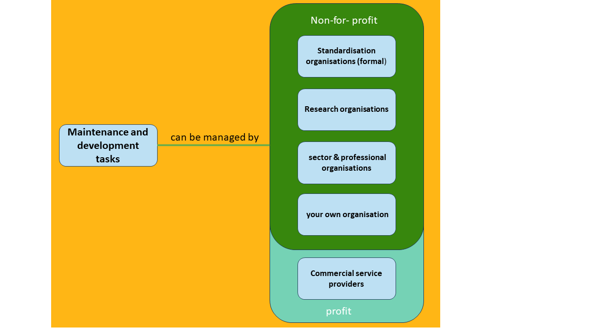
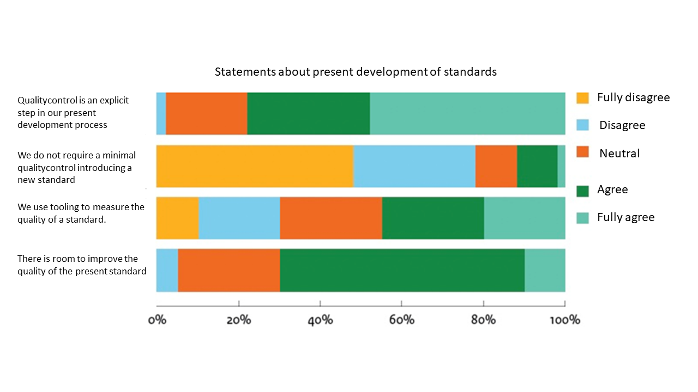
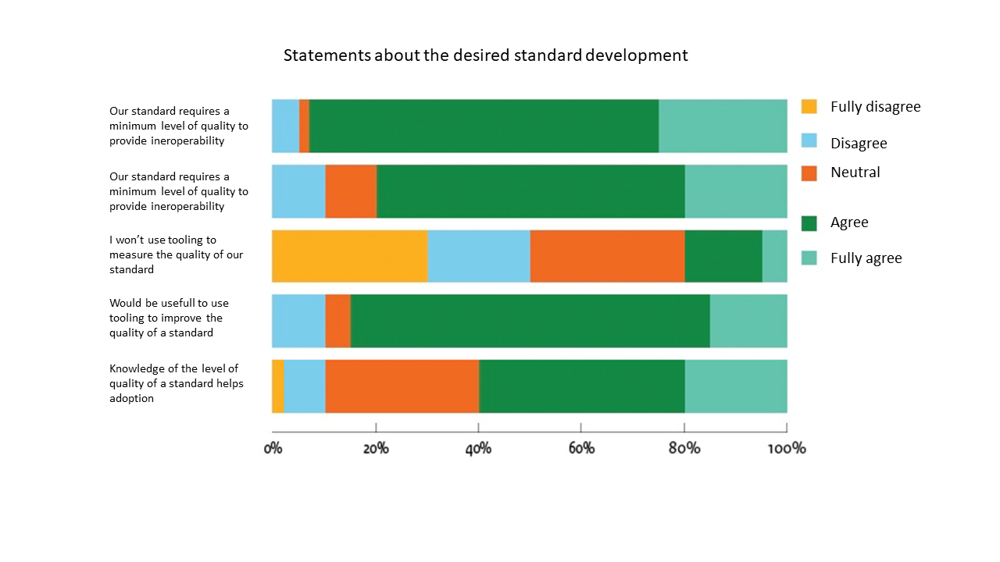

BOMOS Deel 2: De Verdieping, geeft zoals de titel al zegt een verdieping
van de onderwerpen uit het Beheer- en Ontwikkelmodel zoals in BOMOS Deel 1
is geïntroduceerd. De verdieping is gebaseerd op vele ervaringen,
best practices uit zowel de standaardisatiewereld en daarbuiten.
Status of This Document
This is the definitive version of this document. Edits resulting from consultations have been applied.
Documentbeheer
Datum
Versie
Auteur
Opmerkingen
2011
2.0
Erwin Folmer & Matthijs Punter
Toevoeging: De Best Practices
2024
3.0
Erwin Folmer, Gül Işik, Edwin Wisse, Wouter van den Berg
Herziene versie met samenvoegingen uit andere BOMOS varianten
The BOMOS Elaboration discusses the components that make up BOMOS. In addition to operational, tactical and strategic layers, it also deals with implementation support and communication.
The BOMOS documentation is divided into various sections (see BOMOS-structure).
1.1 Purpose
The purpose of this publication is to assist organisations in compiling and improving the management of standards. This publication provides answers among others to the following questions:
How can we successfully (further) develop and manage the standard in our organisation?
How can be structure development and management in such a way that it results in an open standard?
How can we improve the adoption rate of our standard among users?
Thes specific questions were the original reason for drawing up the Management and Development Model for Open Standards (BOMOS) with its best practice guidelines for an open structure for management. Since that time, BOMOS has been used in practice, and users have expressed the need to share more knowledge and experience with the management of standards. Other issues such as improving interoperability based on standards, transparency and the manageability of standards have been added. Finally BOMOS is now used as the common language in the world of standardisation.
The heart of BOMOS is the Foundation. This consists of a basic description of the Management and Development Model and a further elaboration based on literature and experiences gained in practice. In essence, the Management and Development Model is an activity diagram which also offers a definition of the roles relevant in the process of managing and developing standards.
The Elaboration (this document) offers further insight in particular by sharing best practices from the world of standardisation.
Together Part 1 and Part 2 form the basis for BOMOS.
On top of this basic structure, the community has produced a number of BOMOS expansions which can be useful in deploying BOMOS in concrete situations, some of which may involve a slightly different context. We refer to these as the BOMOS Supplementary Modules or a Body of Knowledge, which will remain dynamic over time.
When we talk about BOMOS, what we are actually referring to is the basis as described in Part 1 and Part 2. Although the supplementary modules are clearly linked to BOMOS, they have their own governance, which can result in their being given their own name, their own target group, their own management system, etc. The BOMOS management process also describes the requirements that are imposed before something can be added as a BOMOS supplementary module.
If from your policy making or administrative role you are only interested in the primary level, the foundation (part 1) will offer sufficient
background and context. If however you are personally active in standardisation communities, you can seamlessly continue with reading part 2: The elaboration with best practices, which includes more background and practical tips for standardisation.
If you actually intend to make use of BOMOS, it is advisable that you also study the supplementary modules. These contain examples and tools that could prove useful for implementing open standards. The supplementary modules also contain variants on BOMOS. These implementation profiles make BOMOS suitable for use with more than just semantic standards.
2. Strategy
This section looks in more detail at subjects related to strategic subjects from the Management and Development Model.
2.1 The development and management organisation (Activity Governance)
This activity includes laying down policy on your own administrative organisation (such as the legal form); the bylaws (charter) and forming alliances with other organisations. The regulation of the decision-making process is crucial.
2.1.1 Organisation structure
The BOMOS activities diagram summarises the various activities that can take place in a standardisation community. The Figure below illustrates the outline organisation structure. One key starting point is the division between substantive activities in the implementing organisation and decision making by the governing body.
It is the task of the governing body to commission a (not-for-profit) implementing organisation that is responsible for the majority of the management tasks. The governing body brings together the needs in terms of management expressed by its grassroots and has the mandate on behalf of those grassroot players to reach decisions on issues relating to the standards in question. The governing body and implementing organisation preferably work together with a single contact point at each organisation. The governing body is primarily charged with the task of ‘decision making’. In practice, the governing body meets a couple of times a year, a fact that should not obstruct the desired decision-making process. The governing body must grant the implementing organisation sufficient mandate. In practice we do see certain decisions being submitted to members of the governing body in writing (email) for approval or that the responsibility for specific activities (for example communication) is entrusted to a single member. This makes it easier to hold bilateral discussions between the implementing organisation and the member of the governing body who is responsible and to reach interim decisions (this approach can also serve as an alternative for the single contact point at each organisation).
The essence is that there must be a clear record of which decisions have to be taken at a meeting of the governing body; which can be submitted in writing (email) and which can be taken by a specific member of the governing body, and for which decisions the mandate lies with the implementing organisation. In practice, annual plans are often used for the formulation of the assignment awarded by the governing body to the implementing organisation. On the basis of reports about the annual plan, the implementing organisation is then accountable to the governing body. The annual plan describes the tasks that need to be undertaken; which working groups are in place or need to be established, and what the objectives of the working groups are, etc. The annual plan is approved by the governing body, which effectively makes it the assignment to be awarded to the implementing organisation. The Management and Development Model can be used as a framework within which the tasks in the annual plan are placed. The annual plan also makes it possible to reach agreements on the tasks to be outsourced. The actual development of standards takes place in the working groups which include in their membership actual users of the standards. The working groups are coordinated by the implementing organisation. In many cases, the actual elaborations are drawn up by the implementing organisation on the basis of discussions in the working groups. The product of the working group, a new version of a standard, can be adopted by the governing body and published as a new version. The decision-making process, who (governing body/working group) decides what must be clearly laid down.
Ideally, a distinction is made between the different weights of changes in standards, so that the lightest (least far-reaching) changes can be dealt with by the appropriate working group or implementing organisation itself, and only the most fundamental changes require the involvement of the governing body, up to the level of the governing body decision. A working group that is continuously overruled by the governing body is unworkable.
It is possible to establish an advisory body to support the governing body with solicited and unsolicited advice. The product of a working group in that case will be submitted to the advisory body as a proposal and the advisory body will advise the governing body on the issue. The advisory body should preferably consist of independent and undisputed experts and can be a means of reinforcing independence and expertise. It is essential that these experts be selected on the basis of knowledge and experience and not on the basis of the interests or representation of an organisation; after all, all that is required of them is to provide substantive advice. The representation of interests is already established within the governing body.
Typically, the category-based demarcation of working groups in terms of the content of their work will take place along the following (layered) lines:
Architecture.
Processes/services
Data/information/messages.
Technical standard/transaction standard.
Security.
Another common approach to demarcation is based on the problem domain. SETU (Dutch foundation for electronic transactions in the staffing industry) for example worked with two working groups, namely Mediation and Processing. The Mediation working group is responsible for standards from requests for offers through to the placement of a temporary employee, while the scope of the Processing working group involves the standards from placement through to invoicing. In practice, for more complex standards, specific categories of working groups (e.g. ‘data’) will be further subdivided into working groups for each problem domain (e.g. ‘invoicing’), resulting in a combination of the demarcation approaches.
One group that deserves special attention is the suppliers. For non-profit management organisations this is often a tricky issue. Although crucial for the success of a standard (without correct implementation there can be no working standard), suppliers can also have conflicting interests. In principle, suppliers can contribute to the standard as simple participants and fulfil roles in the working groups, right through to participating in the governing body. Practice has for example shown that in many cases software suppliers make very valuable contributions to the working groups, and as such it is highly recommended that suppliers be given access to the working groups. There is often a fear that suppliers will impose too much of a stamp on the standard. One option as indicated in the above figure is a separate supplier group. On the one hand this offers suppliers a platform while on the other hand keeping them out of the working groups and governing body. In this situation, software suppliers are united in a supplier group, which can advise the implementing organisation and consult with the advisory body.
Decision making within the working group can be dependent on the possible participation by suppliers and on the attitude of the suppliers. In practice, the decision on the level of influence will depend on the way in which the community is organised; if the development of the standard is driven by the interests of the software suppliers, they will (want to) exercise a greater influence on ‘their’ standard. If the development is driven by the needs of a (government) user, then this party will (want to) exercise a greater influence.
The figure offers a simplified basic structure from the governing body, implementing organisation and working groups. Alternatively, an advisory body and/or supplier group can be added. In addition to these suggested possibilities, there are numerous other alternatives, both more simple and more complex. Whatever structure you choose, the reports of the various forums should preferably be made public.
2.1.2 Roles and activities
Part 1 describes the necesarry roles in the Management and Development Model,and linked to the main activities of BOMOS. We will now look in more detail in the opposite direction. Starting with the roles, the table below identifies the BOMOS activities in which they are involved; this also demonstrates that a 1-on-1 connection between role and activity cannot work.
Role
BOMOS activity
Holder
Governance
Vision
Rights policy
Adoption and recognition (policy)
Training (policy)
Quality policy benchmarking (policy)
Community (adoption)
Complaint handling
Implementation support (policy)
Financier
Financing
Authoriser
Architecture (adoption)
Initiation (decision making)
Expert
Architecture (implementation and advice)
Initiation (advice)
Functional manager
Community (implementation)
Quality policy benchmarking (implementation)
Initiation (process)
Wishes and requirements
Development
Implementation
Documentation
Implementation support (implementation)
Technical manager
Contributes to operational aspects
Distributor
Promotion
Publication
User
Consulted on operational aspects
Note
2.1.3 Management tasks in implementation
For the way in which management tasks are developed in an organisation structure, there are a number of different possibilities ranging from entrusting them to a standardisation organisation through to fully developing the structure within your own organisation. Creating and managing your own development organisation for every standard is not a goal in and of itself. Practice shows that few existing organisations are equipped to fulfil the complete package of tasks so that many standardisation communities have in fact decided to create their own organisation. A number of the tasks are then entrusted to their own organisation, but a number of other tasks can be entrusted to other types of organisations. The figure below lists other standardisation organisations, research organisations and sectoral organisations.

Figure 3Assigning of maintance and development tasks
The model makes a distinction between not-for-profit and profit-making organisations. This distinction is relevant in the framework of openness
(see section openess). If the management of a standard is entrusted to a profit-making organisation, then by definition that open standard cannot be open! This does not mean that commercial organisations are unable to develop open standards on behalf of a governing body (organisation) or donate their standard to a not-for-profit management organisation after it has been developed. The development and management of standards need not always take place on a not-for-profit basis although a not-for-profit organisation is the most obvious choice.
The first most obvious possibility is to entrust the management tasks to formal standardisation organisations. The world of standardisation has changed compared with thirty years ago when the majority of standards were developed by these formal organisations. In the modern era, the majority of standards are developed outside the formal standardisation organisations in various forms of consortia, and the number continues to grow. We are also seeing increasingly complex collaborative ventures between standardisation organisations. This is very much the case for semantic standards. Partly this relates to the slowness of the processes within formal standardisation organisations, but mainly it is due to the lack of substantive knowledge and expertise. After all, domain knowledge is essential for semantic standards.
This does not mean that formal standardisation organisations have no value; the opposite is indeed the case. In a number of areas, in potential they have massive added value. For example for raising the status of the standard. The NEN3610 standard, for example, was developed by Geonovum, but to give it additional status was also published as an NEN standard. Another task that can excellently be entrusted externally is secretarial support for working groups.
Nevertheless, substantive knowledge will always have to be organised internally. Research organisations such as universities and institutes are other options to whom tasks can be entrusted. The benefit is the wealth of substantive knowledge, but there is also a risk of lack of domain knowledge or knowledge of specific use. The opposite is the case for sectoral organisations; the advantage here is the excellent domain knowledge but the downside is a lack of substantive standardisation/ICT knowledge. In many cases (semantic) standards are a bridge too far for sectoral organisations. The subject is quickly rejected as being only for boffins, which essentially is not the case; specifically for semantics, domain knowledge is of vital importance.
One option is to create your own organisation, or to call in commercial service providers. This second option flies in the face of government principles. Creating your own organisation is the most often chosen option for the core task of developing management tasks. Many domains now have their own organisations that have knowledge of both the domain and standardisation, for example Geonovum, EduStandaard, CROW, Informatiehuis Water, SETU, etc. The heart of their work involves strategic management activities as identified in the model and to a considerable extent also tactical and operational activities. In this situation, certain activities can be easily and sometimes better outsourced.
A number of suggestions:
Module development;
Module development is a risky business if you undertake it within the development and management organisation. Selecting this option makes you also a supplier and competitor to parties in the community. It is better to encourage module development outside the development and management organisation, possibly in the form of open source software. This decision can also encourage other suppliers to support the standard and/or become involved in its development. The best approach depends on the characteristics of the community.
Certification;
The independence of the certifying body is essential to certification. Standard practice is for the development and management organisation to draw up the assessment framework, before outsourcing the actual assessment process (based on the assessment framework) to external parties specifically specialised in assessment and certification.
Architecture/Roadmapping/Benchmarking;
Support and implementation of these aspects are ideal for a research organisation in the broadest sense (in addition to knowledge institutions, also such organisations as Statistics Netherlands (CBS) for benchmarking). In particular when it comes to benchmarking, it is better to entrust this task to an external organisation.
Communication;
Often appropriate for a sectoral organisation that has already established a communication structure. It goes without saying that there must also be a sectoral organisation that ties in seamlessly with the standard and that is willing to include communication as a core task. Communication regarding the management and development process for a standard demands specific knowledge of that management and serves a specific target group such as software suppliers. This fact must be recognised by a sectoral organisation. Other options are communication departments of other partner organisations.
At primary level, therefore, we can conclude that the choice is to entrust the development and management tasks to:
Existing organisations.
New organisations.
A combination of both.
Entrusting all tasks to an organisation may sound the ideal situation, but there is no single organisation equipped to independently fulfil the complete package of tasks. Even organisations like NEN, Standardisation Forum, etc. are not equipped for this role.
In practice this often means it is necessary to create a new organisation if there is not yet any organisation in place that focuses on standardisation within the domain. Option 3, the combination of the two means that certain tasks can be taken up by this (new) specific domain standardisation organisation while other tasks can be dealt with by other types of organisations as described in this section on the outsourcing of tasks.
2.1.4 The organisation form
Whether just a selection of the tasks or all tasks are to be undertaken by the new organisation, the new organisation must in all circumstances be established, according to a legal form. There are many different legal forms for organisations in the Netherlands. The openness of the standard is an absolutely essential operating principle. The definition of openness specifies that the (decision making of the) standard must be entrusted to a not-for-profit organisation. This automatically excludes a large proportion of the possible organisation forms, leaving only a few viable options, namely:
Foundation.
Association.
Government organisation (as collective term).
The foundation:
A foundation is a legal entity established by notarial deed by one or more natural persons or legal entities. As a rule, its governing board has a chair, a secretary and a treasurer. The governing board is the only compulsory body within a foundation. There can also be a supervisory board that supervises the board of the foundation. Unlike an association, a foundation has no members. A foundation can have donors, but they have no say in the operation of the foundation. A foundation can also have volunteers.
The association: An association is a legal entity under Dutch law. An association is generally established by a civil-law notary who executes the appropriate deed. This is not necessary, but without the civil-law notary, the association has limited legal authority (the directors are jointly and severally liable). If an association is established by notarial deed, it must also have articles. These at least state the objective of the association, the obligations of the members, the convocation of the general meeting (of members) and the appointment/dismissal of the directors. As association has an objective that is aimed for. This objective may not be the distribution of profit among the members. This does not mean that no profit may be made, but any profit generated must be allocated to a specific purpose (such as the objective of the association, knowledge sharing, quality improvement, charitable acts, etc.). An association has members. These are people who are members of the association because they support the objective. Generally the members pay a contribution to keep the association running. Members can influence the policy of the association via a general meeting (of members) (AGM). Meetings of this kind are held at least once a year, and every member is invited and has voting rights. The AGM has all authorities not laid down by law or the articles, and as such is the highest body within the association.
The government organisation: Because of the possible variety of government organisations, a brief discussion is not possible. A government organisation could be deployed in one of several ways: a single government organisation as a management organisation for all standards related to government, or a single government organisation for each individual standard. Alternatively, a single government organisation could take responsibility for implementing the management tasks, but equally multiple government organisations could join forces. For example as an association. The choice of legal form must be taken with due care, also taking account of such issues as the simplicity of the establishment process. For foundations, one possible stumbling block is that it is difficult for government parties to take part in a foundation, and that a foundation is not permitted to have any members. With an association, a key issue is the considerable power wielded by the AGM. It is simple for a foundation or an association to demonstrate openness. For both the foundation and the association, the articles are essential; effectively, they regulate the mandate of the roles in the organisation.
Although a foundation is not permitted to have members, at HL7, the term members is used although in strict formal situations the term associates is used. SETU has no members but participants. A collaborative venture without legal form can work well in practice for management, but for more practical issues can be a disadvantage because the collaborative venture as such has no authority to enter into agreements; in that situation, one of the partners will always be required to enter into the agreement in question. Possible disadvantages of this construction are the loss of identity; being bound by the rules and restrictions of the partner; less effectiveness, etc. The advantage of this form of organisation is that it is easily established and terminated, without legal consequences. The organisation structure can to a certain degree reduce or at least make explicit the non-committal nature. The non-committal nature of the participants in terms of standards is certainly a serious point for attention in the framework of a permanently applied standard.
Note
2.1.5 Vision
Developing a substantive vision on the direction for the standard in the context: The spot on the horizon for the long term. A compact translation for example into a fact sheet on this vision can also be extremely valuable in communication regarding the standard and promoting adoption of the standard. There must also be specific attention for innovation; many organisation use specific tools for this purpose, such as a radar or specifically a tech radar in which innovative developments are plotted on a radar screen based on time and impact. Tools of this kind are also applicable in this case. The vision for a standard is in essence no different from the vision for a business/product, etc. Hence the decision by BOMOS to not provide a specific structure for standards. The further detailing of the innovation subjects referred to in the vision will often take place at tactical level, for example as an element of the Architecture.
2.2 Costs and revenue (Activity: Financing)
The primary objective of this particular activity is to draw up a financial model for the long term that guarantees revenue in line with demand. Developing and managing a standard is a structural expense. The amount it costs depends heavily on the context and dynamism of the standard, and it is not simple to make any generic statements on those costs. The first developments often start with projects which begin with budgets of 30,000 euro and upwards (sometimes many times greater). In addition, an initial project will not directly result in a standard (instead, it investigates the possibilities and scope of a standard, in a working group). Following this initial development, the standard must be structurally managed and further developed. There are known cases in which the management has been organised with budgets in the order of 250,000 to 900,000 euros (per year). Until now, little research has been conducted into this aspect, with the exception of the Ethernet standard: this technical standard cost $10 million dollars to develop. Other information obtained from literature suggests that the revenue from the sale of IOS standards covers around half of the costs incurred by ISO in the development and management of its ISO standards.
2.2.1 The benefits of generic standardisation
Although few figures are available, sufficient economic research has been conducted into the advantages and disadvantages of standardisation. The table below provides a summary based on Blind, K. (2004). The economics of standards; theory, evidence, policy):
Positive effects
Negative effects
Compatibility / interface
Network externalities
Monopoly
Avoiding Lock-ins
Increased variety of systems products
Variety reduction
Economies of scale
Reduced choice
Building focus and critical mass
Market concentration
Information standards
Facilitates trade
Regulatory capture
Reduced transaction costs
The following are particularly relevant for (semantic) domain standards:
Positive network effects (the value rises with the number of users).
Preventing vendor lock-ins.
Increased variety of products and services.
Economies of scale.
Lower transaction costs.
2.2.2 Costs and revenue
It is nevertheless possible to examine the potential cost items and revenue for the management of standards. These are summarised in the balance sheet below.
Debit
Credit
Development costs
Structural budget
Management costs
Project financing
Communication
Membership fees
Membership costs (+ travel expenses)
Grant
Operational costs (accountant)
Services
Accommodation
Licences
Goodwill
Tooling (Licences)
Financing costs
2.2.2.1 Debit
The main costs will in principle relate to staffing costs for the primary task of the organisation; the development of new functionality and the maintenance of all existing functionality in the standards. The standards are published and possibly also promoted and advertised for which communication costs will be incurred. Communication costs consist not only of staffing costs but also the costs for creating a communication platform, organising meetings, the website and for example printed material.
Specific software tools are often used, such as data modelling software, for which licence fees must be paid. Another potential cost item is participation in related standardisation organisations for which membership costs are charged. In different communities, this item can range from 0 to 15% or higher of the total budget. There are also often travel expenses for international meetings. Standard operating costs also apply such as ICT facilities (office automation), accommodation and costs for the accountant for the financial statements. Goodwill can also be considered a cost item. Goodwill comprises the investments made in the environment that do not contribute directly to the standard itself, such as attending meetings and account management. This investment often serves to receive goodwill in return from others (as a form of revenue). Finally there are financing costs which refer to activities aimed at generating income for the standardisation activities. Depending on the financing model, these may be costs for recruiting members or applying for subsidies and grants, etc.
The ratios can shift over time, for example in a particular phase of a standard it is possible to slow down the development process, shifting the focus more towards communication aimed at promoting adoption of the standard. In line with these changes, costs will shift from development to communication.
2.2.2.2 Credit
Potential sources of income include stakeholders who provide money from their structural budget for the standard. Stakeholders could be a ministry, a sector or an interest group. In the same way, these organisations may provide project financing on a temporary basis for a specific project. Furthermore, because standards have both a social and an economic interest, there are often possibilities for receiving grants and subsidies. These subsidies are another potential source of income; obtaining them can however be time-consuming and restrictions may be imposed on the purpose for which the money can be spent.
Structural forms of financing are preferred to (temporary) project financing. After all, no one will want to implement a standard if it is uncertain whether it can still be managed next year, because the standard is funded with finite project financing. At the same time, structural financing is a requirement for inclusion in the apply or explain list with open standards published by the Standardisation Forum.
Other potential sources of revenue relate to the standard itself. It is possible to ask for money for both downloading documents with specifications or linked to the use of the standard. Neither form will encourage adoption of the standard. In practice there is often resistance to paying for the standardisation document, irrespective of the amount. Nevertheless, it is the business model currently used by the NEN for its standards. Also in the framework of openness (see chapter 8), it is unwise to request payment for the documents or use of the standard. However small the amount may be, imposing the charge will at least make the standards less open. In practice, therefore, draft versions of these standards are often used, because in that form they can still be distributed free of charge. Another possibility is services related to the standard. For example consultancy about the standard or implementation consultancy. For example offering services in the form of a central message broker or other forms of providing software/hardware are other options. Finally, income could be linked to the provision of services in the field of validation and certification. All these forms of service provision do engender certain risks. As well as being a management organisation, the organisation also becomes a service provider. This can be a conflicting situation: above all by other service providers on the market, it can be viewed as unfair competition. It can also lead to interdependence between service provision products and the standard itself. If it emerges that the organisation’s own product fails to offer good support to part of the standard, the decision may be taken to alter the standard rather than investing in a product that provides incomplete support to the standard. Clear scoping of which service should be provided by the management organisation and which is left to the market is essential.
In addition to structural financing from the budget of a key stakeholder, the most obvious source of income is a (membership) fee from the stakeholders. Based on the trio ‘interest-payment-authority’, the costs are collected from the same parties that enjoy the benefits. Different parts of organisations may relate different contributions for rates to potential revenue from the stakeholder, by using the standard. It goes without saying that a party that makes a fundamental contribution to the management of a standard also wishes to influence that standard. A related risk is that the interest (and hence the authority over the standard) are seen as equivalent to the financial contribution. This also has consequences for openness.
It is easier to generate income from a mature standard, from the standard itself or from related services, but caution should be exercised to avoid creating resistance to the standard. A standard that is able to fund itself from its income, for example membership fees and licence income, can still be an open standard. Making a profit is not done. To avoid this happening, the organisation form can play an important role. In practice it is difficult to successfully tackle the problem of free riders (profiting from the standard without paying a contribution).
2.2.3 Suitability of revenue sources
The previous section created a picture of potential revenue. The choice of which sources of revenue should be tapped into depends on the situation, but this section attempts to offer support in making the right choices for suitable sources of revenue.
The suitability of a type of revenue is broadly determined by:
Maintaining a balance between costs and revenue.
Openness and transparency.
Sufficient broad-based support.
In other words, sources of revenue that enjoy no support, are not transparent and make the management organisation profitable are not suitable.
To determine suitable sources of revenue, a distinction must be made between different situations:
Distinction between development and management.
Degree of maturity: distinction between a proven standard and a standard in the early stages of its lifecycle.
We also operate three critical principles:
Tying in with an open standard (accessible).
Not hindering adoption.
Payment should be made where the benefit is enjoyed.
Based on these principles, licences have a dubious status because of the way that they restrict openness but above all because they tend to hinder adoption. The same applies to paying for the specification document and paying for the use of the standard. Given the desire for openness, this is not viewed as a potential source of revenue for an open standard.
2.2.3.1 Re 1. Distinction between development and management.
A distinction between initial development and current management is relevant because the first is generally easier to finance than the second. In most cases, clients are willing to fund a project relating to a specific problem in which a standard offers the solution. Once the standard is developed, in the project, it becomes far more difficult to find continuous funding for management. The initial clients regularly step back, or at least require more convincing of the value and necessity of continuous funding. It is also important to explain the scope of current management: adapting the standard to the changing environment. For example changes to legislation, changes to dependent standards and technical innovations. Current management can result in a new version of a standard. (in some situations for example by the NEN, management is more strictly defined as keeping the standard available on a website in which situation management cannot lead to a new version of a standard).
In theory, project funding and grants are ideal for incidental issues such as initial development and for more specific extension of the standard. However, since they are not structural, it is less useful to employ these sources for managing a standard. Structural budget-based funding (for example financing by the government) is of course an ideal scenario, but not open to every management organisation. In the absence of such structural funding, it becomes almost essential to consider a membership model. The desirability of the membership model (sometimes also referred to as contributors or participants since a foundation is not permitted to have members) depends on the exclusive advantages to the members, and the cost aspect. If everyone is able to participate at diversified rates, it is an acceptable alternative. For example depending on the organisation type and turnover. The membership fee should not create an insurmountable barrier for any participant. If there are no benefits to membership, no one will be keen to become a participant.
Potential benefits of membership lie in two areas:
Demonstrating that the organisation supports the standard (for example logo on a website, two-way street: the logo of the participating organisation on the website of the standard and vice versa, the participating organisation is permitted to use the logo of the standard on its websites and flyers)
Participation in working groups. Participation in working groups is often seen as extremely valuable since it delivers knowledge of the processes in the sector and the future development of the standard. Attributing benefits to membership has consequences for the openness of the standard; it is important to find the right balance.
Some standardisation organisations make a distinction in their rates between governing members and participating members. Here doubts start to emerge in terms of openness. Some organisations also attempt to generate much revenue from their suppliers, but this can harm adoption of the standard.
2.2.3.2 Re 2. Degree of maturity
Once a standard reaches a high degree of maturity, characterised by broad adoption of the standard, service provision by the management organisation is another potential source of income. For example various forms of service provision:
certification
training
implementation support
Certification can be employed in several different ways, also as a means of generating financial revenue. In the framework of training, for example, possibilities include offering training days through to complete courses about the standard. The margin on the course can be a source of income, certainly if combined with certificates (making completion of the training compulsory for the certificate). Finally, implementation support is a tool possibly used in a more modest form by providing paid advice on correct use of the standard right through to providing complete implementation processes. This in turn makes the management organisation a market party, and that too has negative aspects.
In summary, service provision will be a source of income that as the standard becomes more mature will offer more opportunities for generating income. A source of income that does not occur commonly but which should not be excluded in the future is the donation. Above all structural donations are an attractive form of funding. This results in the following model:
It should be remembered that the costs of managing a standard also change over time. Certain cost items can change considerably. Today we se such items as tactical management rising steadily, above all due to the relationships between the numerous (international) standards that require harmonisation. If a standard is successfully adopted, another item like implementation support can also rise considerably.
2.2.4 Cost savings in standardisation
The question has of course also arisen whether there are not cheaper ways of developing and managing standards. This is not easy because standardisation initiatives, in particular in respect of industrial standardisation, have the following characteristics:
Minimum cost orientation.
A hobby-like character in the positive sense of the word.
In other words, budgets are not well padded, and standardisation organisations need to make choices about what can and cannot be implemented within the budget. One relevant question is how wise the minimum cost orientation is in relation of the quality of the standard and the adoption of the standard.
Developing a complex standard can cost millions; the primary costs are not charged to the development of the management organisation, but the individual participants such as:
The hours of the experts (volunteers).
Travel and meeting costs.
Membership fees and costs for the purchase of other standards.
It is possible to achieve more efficiency in the lead time to the standardisation process. Time is money and the development process for standards is often extremely time consuming. Any time saving in the development process could save considerable costs. Take for example the pressure cooker in the waste industry, where the foundation for the standards was laid in a week.
The different standardisation organisations in each sector also have a tendency to want to reinvent the wheel, mainly out of ignorance, and that too leads to inefficiency. For example the development and management process can probably be copied from one standard to another, rather than reinventing them. At the same time, the core of any validation service is the same for every XML (or JSON) based standard; nevertheless, many management organisations continue to build their own validation service. It can be argued in general that by using online tools, the deployment of volunteers can be made more efficient. The table below provides a summary of a number of suggestions for making the standardisation process more efficient:
Component of the standardisation process:
To be made more efficient by:
Forming a convention
A specific and detailed convention which strictly defines what is in/beyond the scope of the standardisation initiative.
Creating development and management processes
Reuse of descriptions (e.g. use of procedural documents from other standardisation organisations.
Creating the management organisation
Reuse of (validation) tools, but also tools for making standards.
Preparation
Optimum and tight scheduling allocated to the various tasks. Also defining clear wishes and requirements for the solution, to avoid ‘scope creep’. (‘scope creep’ is the phenomenon according to which the scope of the standard shifts gradually during the development process.) Also identifying the potential sources (other standards) that could be reused, at the earliest possible stage.
Development process
Innovative development approaches to standards (e.g. use of a pressure cooker), but also tools such as wiki, to enable joint working.
Review of the standard
Efficient review process and use of templates for gathering comments.
Adoption of the standard
Online tools for voting.
Savings achieved through innovative approaches to the development process can also be a pitfall. Face-to-face meetings are a large cost item. Savings on this particular item can often be achieved via online options such as online videoconferencing, forums, mailing lists, etc. In particular, the open source community believes that face-to-face meetings have become surplus to requirement and that asynchronous communication should be sufficient, also to allow worldwide operation, in all time zones. However, developing open source software is not the same thing as open standard development. In other words, using the same process represents a pitfall. Standards often involve complex material and functionality, in which mutual understanding and trust are of key importance. Direct face-to-face communication is essential. During the COVID pandemic, online developments advanced rapidly and became accepted; it is of course sensible to benefit from these changes. Efficiency means ensuring the correct balance between face-to-face and online meetings, and use of other online tools for communication and dealing with technical issues. In other words, innovative development approaches such as the pressure cooker about the Web can generate savings, but will never replace costly face-to-face meetings.
2.2.5 The business case
The business case for standardisation is a commonly discussed issue. Before the decision to invest is taken, an understanding of the business case must be gained. In reality it involves a number of different business cases:
The business case for the standard (or the chain)
The business case of the individual organisation to implement the standard.
The business case of the new version of a standard.
The first business case is interesting for government for harmonising policy relating to standardisation. It is often part of the policy relating to a broader social or economic issues. This business case is of course also relevant for the standardisation organisation but it is beyond the capability of most individual organisations. The individual organisations need a different business case, specifically for their role in the chain.
Quantitative studies into the business case of standardisation are difficult to conduct and do not always generate valuable insights. Nevertheless, qualitative research can be relevant and can be successfully implemented. Merely understanding which part can enjoy the benefits and identifying the organisations for which there are no benefits is valuable. It is also meaningful to know which parties can enjoy relatively more benefits than other parties, even if they have the same role. For example the market leader can enjoy fewer benefits compared to the runner up, in the same way that an organisation that has a modern back office may enjoy more benefits. Based on these insights, the behaviour of the participants in the working group can potentially be explained. The quantitative business case is difficult because standards are not an end but a means of achieving the end, namely interoperability. The business case is then in fact a case for interoperability. In line with this understanding, there are often few projects in practice which have the objective of implementing a standard; instead the aim of these projects is to realise interoperability for example for purchasing. This means that the business case for the project is broader than for the standard. For example we regularly see projects that switch from a paper exchange to a standardised digital exchange in which process optimalisation will also be carried out. As such, the standard becomes an essential element of a far larger project. It is difficult to specify which revenue and costs can be attributed to the standard within the larger project. There are also quallitative benefits, which then need to be expressed in terms of quantity.
Business case type 3 deserves particular attention: Replacement standard/ new version. The fact of being a replacement or new version makes it relatively simple to draw up the business case, but it cannot be made positive, in practice. For example, the business case for e-invoicing: If an organisation already uses UBL or SETU for e-invoicing, it is difficult if not impossible to make the business case for a new standard (UN/CEFACT Cross Industry Invoice) positive. For that reason, old standards will still continue to be used for a long time (for example EDI), because there is no positive business case for the new/different standard, as long as there is no interoperability problem. One of the world’s most successful standards, RosettaNet, illustrates this fact: despite the fact that an XML version of this standard was developed years ago, there is almost no migration from the old EDI version, and adoption of the XML version has remained low, for a long time.
2.2.6 Drawing up a business case
Despite the difficulties outlined above and the various attempts already made, we will still attempt to sketch out an approach that can offer insight into the business case. The approach described in this section has been used to draw up a business case for a semantic standard in the jewellery sector. Step-by-step plan:
Describe current situations and future scenarios and identify stakeholders.
Determine the costs and benefits in the chain based on the framework.
Allocate the costs and benefits to the various stakeholders (Attempt to quantify the costs and benefits for each stakeholder).
The first three steps are explained:
2.2.6.1 Step 1 - Describe current situations and future scenarios and identify stakeholders.
The first step starts with analysing stakeholders; what parties have a relationship with the interoperability problem for which a standard could offer a solution. To identify the stakeholders, the NEN stakeholder analysis can be used (zie sectie Werkgroep en stakeholders).
The next step is to analyse the current situation; what are the starting positions from which the primary stakeholders must set off? It is also important to develop a picture of the future scenario with the standard, so that the migration paths from the current situation to the future scenario are clear.
This is demonstrated in the figure for the primary stakeholder, the jeweller, in this example. Of course the intention of the implementation is to ensure that as many parties as possible arrive at future scenario 1 or 2, and start to use the standard.
2.2.6.2 Step 2 - Determine the costs and benefits in the chain based on the framework.
In step 2, a cost-benefit model is drawn up. In generic terms, what are the one-off investments, the operating costs and the benefits in relation to the standard? For many standards they will be relatively equal. This makes it possible to start with the model from the jewellery sector, in which the necessary adjustments can be made. The model for the jewellery sector is reproduced below.
2.2.6.3 Step 3 - Allocate the costs and benefits to the various stakeholders.
The various costs and benefits will not apply to all stakeholders, and the degree of relevance will also differ. In this step, the costs and benefits from the framework in step 2 are specified one level deeper, and allocated to a stakeholder with a defined relationship.
Based on this simple step-by-step plan, it is possible in a relatively simple manner to generate insights into the business case for a standard, without focusing blindly on the numbers. Clearly, after completing step 3, an attempt can be made to express the identified costs and benefits.
3. Tactical
This section looks in more detail at subjects related to tactical subjects from the Management and Development Model.
3.1 The open structure of a standard (Activity Community)
Openness is an important aspect of a sustainable standard. But what does it mean for the management organisation? We can consider this is more detail by considering a definition or model of an open standard. However, over time there has been a great deal of discussion about the definition of openness. The discussion is often focused on the availability (free of charge or nominal amount for purchase), user rights (whether or not to allow Intellectual Property Rights (IPR)/Royalty Free and the standardisation process (free participation yes or no). The model developed by Krechmer provides a neutral and broad vision on openness, which is why we use in the BOMOS.
3.1.1 Krechmer’s open standards model '10 requirements'
Ken Krechmer developed a model that clearly describes the elements of openness and that allows him to compare standardisation organisations. In the model, he distinguishes between the various aspects of openness (requirements) and the different points of view for standards. For his points of view/roles, he has selected the developer of the standard, the implementer of the standard in a product and the user of the standard (product in which the standard is embedded). Not all aspects of openness are equally relevant for each role, as shown by the model:
Requirements
Developer
Implementer
User
1
Open meeting
X
2
Consensus
X
3
Due process
X
4
One world
X
X
X
5
Open IPR
X
X
X
6
Open change
X
X
X
7
Open documents
X
X
8
Open interface
X
X
9
Open access
X
X
10
Ongoing support
X
For the management organisation, these 10 criteria for open standards have the following meaning:
Open Meeting means that everyone is permitted to participate in the standardisation process. No stakeholders are excluded. It is also important that it is possible to participate on a per-meeting basis, at low cost. This means that it is also possible for students or for SME enterprises to join in. Meetings must be clearly announced and there must be as few barriers as possible for stakeholders, to participate. A development and management organisation must be careful with stakeholders wishing to participate. In many cases, it is no easy task to identify sufficient stakeholders who wish to participate actively. In other words, rather than obstacles, it is important to provide incentives. The pitfall is to only open up meetings to a restricted and specified group of (paying) stakeholders.
Consensus refers to decision making within the organisation. Is there a (group of) organisation(s) that dominate? In principle, all participants should be given equal rights and contribute equally. The pitfall is to have a dominant group (for example the governing body/parties who make major financial contributions) who have full control.
Due Process refers to the processes that describe how voting rounds are organised and the processes for requests to reconsider decisions (appeals processes). There must be procedures for complaints and those procedures must be clear. The same applies to procedures for decision making, in particular the process for resolving potential stalemates. The pitfall is failing to organise these aspects.
One World refers to the ideal situation in which a single standard is used throughout the world for the same objective, also with a view to avoiding trade barriers. Naturally this does not mean that it is not possible to introduce a new standard for a specific purpose or context. It does however mean that no regional or national standard needs to be created if a worldwide standard is sufficient. In general terms, One World also means that the standardisation organisation does not compartmentalise, with a single standard developed without knowledge of other standards/initiatives. The pitfall for the standardisation organisation is to become blinkered, focusing exclusively on its own standard while other good standards are already available, possibly semi-finished. What open means here is open in relation to other standardisation organisations so as to avoid developing overlapping but related issues. Another pitfall is selecting a scope that is too limited for the standard to be developed or managed; for example national rather than worldwide.
Open IPR (intellectual property rights) is the aspect that has been the source of most discussion, in which ‘royalty free’ and ‘irrevocable’ have become the buzzwords for the definition of open. For a long time, standardisation organisations and suppliers have attempted to include the term RAND (Reasonable and Non-Discriminatory) in the definition of openness. It is for this reason that these standardisation organisations do not satisfy the definition of open on this aspect, which means that many standards that are perceived as being open are not in fact open on this point, according to the definition. The definition of an open standard leaves no point unclear, and prevents discussion about the meaning of RAND, for example what is reasonable? This has been the source of much discussion. The standard should be royalty free and irrevocably available. The pitfall is failing to arrive at this situation, which is often the case for semantic standardisation organisations. The intentions are good (open), but by failing to explicitly regulate, it can lead to problems in the future. Furthermore, in many cases, there are no regulations regarding the rights of the contribution made by ‘volunteers’ from external parties to the standard working groups. This is a potential risk for the sustainability of the standard.
Open Change: If a supplier is only required to make the standard openly available, but is free at any time to implement changes, the benefits of standards will never be achieved and the supplier retains its position of power. An open method of implementing changes to the standard is of vital importance, but to date has received little attention. Standardisation organisations that fail to comply with the open meeting, consensus and due process requirements are by definition unable to comply with the open change requirement. An open structure can be achieved by describing change processes in which no single party enjoys a special status in decision making. The pitfall is failing to structure the process of change in an open manner, often because there is no attention for this issue.
Open Documents means that all documents must be openly available. This does not just mean the standards themselves, but also that work in progress must be made available, together with minutes of meetings, etc. This enables users of the standard to understand the complete background. The pitfall is to only make the standards themselves openly available.
Open Interface is above all relevant for technical standards, and relates to leaving space for suppliers for closed extensions, as well as leaving space for backwards and forwards compatibility. The pitfall is failing to address backwards compatibility and not leaving space for temporary extensions (forwards compatibility).
Open Access: End users often take at face value the fact that their supplier(s) has/have correctly implemented the standards. To achieve ‘Open Access’, it must be possible to test the implementation of the standard (for conformity); this can be achieved using conformity testing (test protocols) right through to official certification. Another possibility consists of so-called plugfests in which the interoperability between the different implementations of a standard are revealed. The pitfall here is that postponement will lead to cancellation. To make open access meaningful, the standards must achieve a certain degree of maturity. Which is why implementation is often postponed. And postponement in turn leads to complete cancellation. An open structure also means being open about the use of the standard in implementations, for example by publishing implementation overviews.
Ongoing Support refers to the support provided to the standard throughout its lifecycle. The pitfall is to stop providing support as the interest from suppliers wanes. An open structure at the very least means that the lifecycle of the standard is described, according to which users can derive a guarantee about the support for the standard. In the ideal world, support should only end when there is no longer any interest in the standard among end users.
Many discussions about openness today consider just two aspects of openness, namely ‘One World’ and above all ‘Open IPR’. As a consequence, the other aspects often remain underexposed. When it comes to achieving a maximally open standardisation organisation, every little helps. To date there is not a single organisation that is known to be fully open on every point. Complete openness on all these points is a utopian idea, but each point is worthy of attention and can support the thinking process in achieving greater openness in standardisation. It is also worth realising that in many cases, formal standardisation organisations fail to (or only partially) comply with aspects 6-10.
3.1.2 Specific tips for openness
Based on the above, we can offer a number of specific tips: Make decision making open by:
Publishing the minutes of the various forums.
Consensus decision making
Not excluding any parties at meetings.
Producing a website on which all documents (including drafts) are made available free of charge.
A clear change procedure.
Making the standards testable based on test procedures, validation, certification and/or plugfests.
Organising structural financing.
Focusing full attention on the relationship with other standards in the environment.
Explicitly laying down the rights; the intellectual property rights to the standards, copyrights to documents, the contribution by individuals in working groups and in the establishment of the standards. Documenting version management: how to deal with backwards and forwards compatibility and how to record support on the basis of the lifecycle of a standard.
Recording the development and management aspects in a document.
3.1.3 Making the model assessable
Krechmer’s model is an ideal starting point but in order to offer more practical tips, it can be added to. We have therefore further elaborated the criteria into variables for each criterion. These variables can be better related to the situation in practice. Eventually, scores can then be allocated for each variable; this in turn makes it possible to compare openness between standards. In theory, it should then be possible to define a minimum score for a standard to be described as open. However, this does no justice to the fact that certain variables are more important than others.
The model on the next page is based on the 10 criteria identified by Krechmer, and is a tool for implementing management activities in an open manner.
Principle
Criteria
Variable
Explanation
Score
1
Open meeting
Everyone can participate in the standardisation process
1
Entrance fee
Is there an entrance fee for standardisation meetings? Is it affordable for the various participants? Free (2 points), Affordable, low or diversified charge (1 point) or costly (0 points)
0/1/2
2
Accessible meeting locations
Meeting locations must be chosen in such a way that travel costs are minimised for everyone
0/1/2
3
Open to all
Every organisation or person can in principle participate in the development of the standard
0/1/2
4
Open calendar
Is the meeting agenda available online and up to date? Well in advance?
0/1/2
2
Consensus
The basis of a standard consensus
1
Open proces
The process of standardisation is public so that everyone can see clearly how issues were decided on
0/1/2
2
Procedure in the absence of consensus
There is a procedure for the event that no consensus is reached
0/1/2
3
Equal vote
All stakeholders have an equal vote in the decision making. This prevents the presence of dominant stakeholders.
0/1/2
4
External review
The results of the standardisation meetings are published which gives external organisations and individuals an opportunity to review the results. This also increases quality.
0/1/2
3
Fair standardisation process
Documented procedures to guarantee consensus during the standardisation process
1
Open agenda
It is possible for any stakeholder to submit agenda items
0/1/2
,
2
Process management
Are there regulations that record the procedures and protocols of the standardisation process (method of voting, possibilities for appeal, etc.)
3
Independent chairperson
Are the standardisation meetings chaired by an independent person so that the interests of all stakeholders receive due attention?
0/1/2
4
Possibility for appeal
If you are dissatisfied with the decision making at a standardisation meeting, is it possible to submit a complaint to a higher body? This body considers this situation and has the authority to intervene
0/1/2
4
Open IPR
Intellectual property rights for the standard are as open as possible
1
Rights are published
The way in which legal issues regarding the standard are organised must be public
0/1/2
2
Legal obstacles
The fewer legal obstacles for the use of the standard, the more open the standard is
0/1/2
3
Mutual licences
Adaptations to the standard are automatically subject to the same licences as the original, so amended standards are subject to the same licences as the original, so adapted standards are not impaired by all sorts of legal obstacles
0/1/2
5
One world
The standard can be used for the same purpose worldwide
1
Harmonisation
To what extent does the standard tie in with related standards?
0/1/2
2
Location independence
To what extent does the standard contain elements that are unique to a specific geographical location? An open standard should include as few of this type of elements as possible to increase applicability
0/1/2
6
Open documents
Documents relating to the standards are public
1
Open concepts
The concept documents relating to the standard are public
0/1/2
2
Open specifications
The specifications for the standard are public
0/1/2
3
Open minutes
The minutes of meetings are public
0/1/2
4
Open procedures
The procedures (such as Consensus and Fair standardisation process) are public
0/1/2
5
Open distribution
Everyone is free to distribute the documents referred to above
0/1/2
7
Open interface
Compatibility and conformity lead to interoperability
1
Compatibility
Different versions of the standard are compatible with each other (as far as possible). In other words, different versions are interoperable at base level.
0/1/2
2
Implementation complies with specification
The standard explicitly describes what conformity to the standard means and which criteria must be satisfied. This guarantee is transparent about which implementations conform to the standard. Do two implementations that conform to the standard mean interoperability?
0/1/2
8
Open access
There are methods for testing and certifying conformity.
1
Validation tests
It is possible to test whether a standard is actually correctly implemented. A low-threshold test option.
0/1/2
2
Conformity of validation
An assessment can be carried out on conformity, which includes validation. The result is recorded in a document.
0/1/2
3
Conformity of certification
An assessment carried out on the basis of conformity rules, the result from which is published openly and can result in a certificate.
0/1/2
4
Disability support
The standard takes account of people with a disability and satisfies the relevant guidelines.
0/1/2
9
Ongoing support
The standard is supported until there are no more users
1
Support throughout the entire lifecycle of the standard.
Support is provided to users of the standard by the standardisation organisation throughout the lifecycle of the standard (from start to finish). In particular also at the end of the cycle, when there may still only be a small number of users and the tendency to offer no further support is great.
0/1/2
10
Open change
Changes to the standard based on openness
1
Issuing a new version
Who decides when a new version of a standard will be worked on and when it will be published? This too is subject to consensus
0/1/2
2
Submitting requests for change
Who is permitted to submit requests for change and are they treated fairly (based on a documented procedure)? No parties should be excluded
0/1/2
The Standardisation Forum assesses standards among others for openness for inclusion on the apply or explain list. Krechmer’s criteria are also included in this broader assessment. The model presented here is a more in-depth assessment, intended as a guideline for designing for openness, and not to be used in the formal process for inclusion on the apply or explain list. For more information about the assessment criteria, visit the website of Forum Standaardisatie.
3.1.4 Open structure with Open Source Software
Part of the activity diagram is module development. This refers to the ability of the organisation to (commission the) development of software in which the standard is implemented. It is dangerous for a standardisation organisation to do this itself on a ‘commercial’ basis, because this would make the standardisation organisation a competitor for other suppliers on the market. This would rapidly reduce support for the standard by other suppliers. This risk can partly be obviated by using open source for the development. The open source module in which the standard is processed is made freely available which allows commercial suppliers to continue with the process so that in the long term, the standardisation organisation itself can withdraw from the development process, entirely. As such, it is above all a means (incentive) to get the market moving.
Furthermore, Open Source Software is an excellent alternative for closed source software. The primary difference lies in the business model. If a standard is to be adopted, it is important that the standard be implemented in all software, irrespective of the business model. From the point of view of adoption, to give a specific type of supplier preferential treatment represents a certain risk, since it will create resistance among other suppliers.
Open Source Software should never be confused with open standards. They are fundamentally different concepts according to which, from the point of interoperability, only open standards are essential.
3.2 Relationship with other standards (Activity Architecture)
As previously outlined, interoperability is the objective and standards are the means of achieving it. This section discusses the relationship between different standards.
3.3 The stratification of standards
A complex set of standards is needed to achieve interoperability (exchangeability) between organisations or systems. This makes the subject extremely complex, because it is no longer a question of selecting or managing a single standard, but a whole set of standards that are very closely related in certain areas. It is possible to make a distinction between standards for technical matters and standards for the semantics of information exchange. This is demonstrated by the interoperability framework (based on Jian, H., & Zhao, H. (2003). A Conceptual Model for Comparative Analysis of Standardization of Vertical Industry Languages); the examples between brackets are somewhat outdated examples of standards that can be used for this structure.
When it comes to achieving technical interoperability, choices will have to be made. In many cases, a technical philosophy is chosen, which relates to a family of standards; In truth, there are not many possible choices. For example the internet is the most obvious communication mechanism based on the standards TCP/IP, HTTP, etc. When it comes to the messaging (transport) mechanism, there may be more choice, but for some time the obvious choice has been the Web Services family, whereby REST APIs have recently de facto become the standard. The choice of Web services brings with it a choice in favour of individual standards (such as SOAP, WSDL, etc.). It should however be remembered that it is not enough to simply opt for these technical standards. To achieve real interoperability, other profiles are generally also needed over and above these standards, which describe how the options should be structured within the standards. Although not domain specific as such, the structure is often created for each domain, above all as a means of offering users a complete interoperability solution in combination with the semantic standards.
Finally, the technical standard JSON is today the most obvious choice. In the past, the most appropriate technology was XML, and before that EDI. Although these are still widely used in existing situations, they are no longer used in new situations.
Even if the technical standards set the parameters, the real challenge lies with the semantic standards which focus on the meaning of the information exchange. Vertical semantic standards are focused at a specific sector while horizontal standards go beyond sectoral boundaries. In practice, vertical standards are essential to successfully tie in with the context of the organisation. Vertical standards can represent the further implementation of horizontal standards as explained in the next section.
To make this situation even more complex, there are standards that are used to make standards, for example the UML standard which is used as a language for drawing diagrams that contain the process and data model for a standard.
3.4 The lifecycle of stratified standards
The use of a stratified family of standards makes it necessary to actively work towards applying up-to-date standards. This can represent a challenge. When an underlying standard transitions to a new version, it may be necessary to adapt the overlying standard to the underlying standard.
It is therefore important that the underlying standard be managed by active management . Only if the standard in use is managed is it possible to accept requests for change and correct possible mistakes in the standard. If a stratified standard makes use of an underlying standard which is not managed any longer, the possibilities for updating the standard are limited.
In other words, it is advisable when managing a stratified standard to actively monitor developments in the underlying standard(s) if you wish to be able to switch to a new version.
3.4.1 The relationship with international standards
Compared with other standards, semantic standards are incredibly complex and are developed and managed in a different way. The majority of IT standards are already developed outside the official standardisation organisations (such as ISO and NEN), in so-called industrial consortia such as W3C and OASIS. However, when we look at semantic standards, we must go a step further, because for the most part these are developed internally within the own organisation.
Practice shows that distinguishing only between horizontal and vertical standards is too restrictive. International vertical standards often also require a specific structure, for example in the context of a country (such as the Netherlands) in order for them to tie in perfectly with the business processes in that context. This is vital to achieve interoperability. As a result, standards, also referred to as agreements or application profiles, are created at national level, that contain a further implementation of an international standard. In addition, specific code lists for the national context are often added. This results in the following classification:
International horizontal standard
International vertical standard
National standard/application profile/agreement/taxonomy
National vocabularies, code lists, etc.
This is also reflected in the organisations: HL7 is the international standard, but there is also an HL7 Netherlands. For international HR Open Standards, it is SETU that produces the Dutch HR Open Standards profiles.
Whatever their form, be they an international horizontal standard or a national code list, they all have to be developed and managed! This does not however mean that all four classifications must be present in a specific application domain. In practice, depending on the situation, any combination may occur.
During the adoption phase, one commonly heard comment is that people only wish to adopt the international standard, as opposed to a national version. Based on the argument that they do business worldwide, or that the international standard ties in more broadly or is more widely known. However, in practice this will result in restricted interoperability, because the international standard will tie in less successfully, and in many cases will feature too many degrees of freedom. Given that interoperability is the objective of standards, this is not a wise choice. Instead, it would be wiser to focus on the national standard that ensures tying in with international standards and guarantees optimum application in the Dutch context.
It is also useful in the management phase of a standard to continue to focus attention on international standards. If no appropriate international standard is available during the adoption phase, a national standard may be the only option. But that situation can change. One example is the Digikoppeling (Digilink) standard. Digikoppeling comprises an interface specification which serves the same purpose and application as the European eDelivery, which was adopted later. In the framework of standards management, the decision could be taken to phase out the national standard in favour of a more recent international standard. Here, too, a national profile on the international standard could be valuable. It does however mean a different role for the management organisation. If necessary, the management organisation will represent Dutch stakeholders in managing the international standard.
One vital point for attention in relation to international standards is that in the case of an international vertical standard combined with a national application profile, for example, a different name must be applied to each, in order to avoid confusion in practice.
3.4.2 Examples of stratification of standards
Finally, even within the standards themselves, stratification can occur in different ways. For example between vertical and sector models and horizontal standards, in addition to which other (e.g. technical) standards are often combined to offer a total solution for interoperability.
The sector-specific approach to semantic standards raises the fear of compartmentalisation between sectors. The question of cross-sectoral interoperability is not solved and may even be exacerbated. The potential problem is widely recognised and solutions have been conceived, but to date they all collapse with very low adoption and lack of grassroots support. There are two possible causes:
The problem of cross-sector interoperability is not yet seen as urgent given the greater challenges present within the sector.
The proposed technical solutions are often extremely complex. One technically attractive solution for example is the UN-CEFACT Core Components standard. Although more than ten years old, this standard has never enjoyed broad adoption.
The core of the solution is probably not a technical one, but lies with the management organisations active in the various domains. They all have to adopt a less fragmented approach and work better together with their fellow management organisations from related sectors. There have been improvements in this respect in the past few years. In part this is due to ‘open’ thinking because in a one world (see section about openess) there are no competitive standards and the standards match perfectly together.
3.4.4 The relationship with formal standards
The previous sections are clear indications that in most cases semantic standards are stratified and as such build on or make use of other standards. One interesting problem that is generic to the development of standards, but that becomes abundantly clear in the pressure cooker, is interaction with formal (e.g. ISO, CEN, NEN) standards. The basic underlying principle is that as far as possible, existing standards should be reused, rather than constantly reinventing the wheel.
There are a number of sore points when it comes to formal standards:
The inability to access the formal standards: In the pressure cooker session, it was suggested on a number of occasions that an existing formal standard could already contain a (partial) solution. However, no one knows for sure, because no one has been able to access the standard because of the related costs. Even if those costs can be limited, the threshold remains high. At the end of the day, the supervisor still had to purchase the standard, only to discover, sometimes after just three minutes, that the standard was unusable. This situation is a clear obstacle to rapid progress (in the pressure cooker). In practice, it is clear that even a ‘free registration’ (for example at Geonovum and SETU) is perceived as a too high threshold.
The costs during the development of standards: Broadly speaking, the costs for buying a formal standard (specification document) are around 100 euro per standard. A relatively small amount when it comes to developing a new standard. Nothing more than a shame if it becomes clear immediately following the purchase that the standard is not relevant. The greater problem lies in numbers; it is almost never the case that only a single standard has to be purchased. In the case of the pressure cooker for the waste sector, in addition to purchasing a DIN standard, NEN and ISO standards also had to be purchased, and the ISO standard was made up of four parts, each of which had to be purchased individually. The outcome was higher costs and higher levels of frustration about the hassle involved. That hassle often also relates to the purchasing process within an organisation. Very quickly a sense of let’s not bother, it’s probably useless anyway will emerge.
Since NEN working groups have unlimited access to the standards, this problem can be obviated by establishing the working group/pressure cooker under the auspices of the NEN. However, establishing an NEN-based working group also costs money.
Reuse: Formal standards are extremely valuable. Also in the pressure cooker for the waste sector, existing formal standards contain sufficient valuable information to avoid the need to completely reinvent the wheel. The issue that then rises is the lack of clarity about how the formal standards permit reuse. There are two options:
Reference to the formal standard, but this results in costs for implementations (see below).
Adopt a section from the formal standard.
The second option is particularly useful if the formal standard has a far broader application (or applies to a different domain) but with choices that are also perfectly applicable to ‘our’ standard. It does however raise questions about the openness of the end result. The rule of thumb at the NEN is that 10% may be copied, following consultation with the NEN. Permission must be sought from the NEN to allow them to check that no patents based on the formal standards are infringed.
The costs for the implementation: If reference is made to an existing formal standard, every supplier wishing to implement this standard will be required to purchase the formal standard in question. Even if their own standard is open and freely available, by referring to an existing standard, we unavoidably create an obstacle to adoption with the potential risk that the standard will be incorrectly implemented because the decision is taken during implementation to not purchase the formal standard. In other words, all implementing parties are saddled with costs thereby creating an obstacle to adoption and interoperability, which was never intended.
3.4.5 Strategies for dealing with localisation profiles
If we wish to use an international standard in a national, sector-specific context, we automatically create an important dependency. Depending on the context and the strategy chosen, the relationship between the national and the international standard can be implemented in different ways. Ideally, the international standard is fully adopted, but as we know from practical experience, an international standard can almost never be simply copied, one on one; in some cases the changes are limited; just a small number of extra issues have to be added for the specific national context in order to achieve interoperability.
The following situations can arise:
The specific context requires extensions/adaptations to the standard.
The standard includes numerous extraction issues which result in additional complexity not necessary for the specific context.
Mistakes are found in the international standard.
Items are missing from the standard that are not specific to the context.
There is a need for a new standard.
Generally speaking, in these situations, the following activities can be undertaken:
Make adaptations to the international standard (without returning the adaptations to the international standard) (Adaptations)
Implement permitted extensions to the standard (Extensions)
Remove items from the standard (Omissions)
Temporarily adapt the standard (we make the necessary adaptations to the international standard, but only need a solution that is temporary, until the international standard is adapted) Temporary Adaptations)
We reuse the international standard but adapt it to the needs and create a new standard
Local Profiling
A profile (that does not comply with the international standard) on top of the international standard, in which all adaptations are included.
Compliant & Temporary Local Profiling
A profile in which in principle only permitted extensions are included, but which also contains temporary solutions to issues submitted internationally, but which justify a temporary solution. These temporary solutions do not comply with the international standard.
Compliant Profiling
Only extensions in a profile that complies with the international standards.
Comply
100% adoption of the international standard without extensions or adaptations.
In particular if the intention is to achieve international interoperability, the best solution is as far as possible to remain in line with the international standards and to select a strategy on the right-hand side of the figure, if possible compliant profiling. However, this requires harmonisation with the international standard, which involves costs for example due to attending the international standardisation meetings. If your aim is to achieve interoperability in an international context this is essential.
3.4.6 The Linked Data standards for semantic modelling
Linked Data has already come a long way, to the situation in which it has become the de facto standard for semantic modelling. The standards and technologies covered by Linked Data -- such as RDF, SPARQL en OWL -- are becoming increasingly widely used in practice. It started in the academic world but over the past few years has spread into both the public and the private sector.
Linked Data results in changes to the sematic standardisation discipline described by BOMOS. It is not merely a question of using new technologies and tools. Linked Data means a different approach to semantic interoperability: the emphasis is shifted from standardisation of messages (or ‘transactions’) to the standardisation of the underlying domain description; the language. The language in a domain is standardised using vocabularies and ontologies but it also becomes possible to create links between domain ontologies in such a way that Linked Data can break down the barriers between sectors, until it becomes a tool for cross-domain interoperability. In addition, Linked Data standards satisfy the open standards criteria, and a number have already been included in the apply or explain list published by the Dutch government.
3.4.7 Promoting the use of standards (Activity Adoption & Recognition)
Many standardisation organisations are looking for opportunities to encourage the use of their standard. This can be achieved in several different ways. The related strategy is referred to as an adoption strategy.
3.4.8 Success factors for the adoption of a standard
Working groups at the Standardisation Forum have identified a number of critical success factors that played a role in the adoption of various standards:
The standard must be mature; otherwise no one will be willing to invest.
Patience: Adoption of a standard takes time, sometimes several years.
The benefits must be clear to everyone, in the business process, in society and financially; there is support.
There must be a dedicated problem owner, specifically because adoption takes years; true commitment is essential.
There must be a critical mass of users.
A leading party or a leading process can massively encourage adoption.
There must be an active community involved in the development and use of the standard.
There must be funding for support, training, remuneration, etc.
Use a good mix of adoption tools.
3.4.9 Choosing the right tools
Selecting the ideal strategy for promoting the adoption of a standard is no easy task. Sometimes there is no need for such a strategy, because the standard is fully ‘supported’ by parties in the field. However, in many cases, a standard is part of a broader development. For example a standard for the digitalisation of a chain. The introduction of the standard relates to the question of whether an organisation intends to start the process of digitalisation.
The tools for adoption can be divided into three groups:
Financial: the ‘carrot’ that encourages adoption by facilitating use of the standard. Examples of the tools available include offering a grant or supplying implementation instruments that reduce the costs of implementation.
Communication: the ‘sermon’ supplying information about the benefits offered by the standard to the organisations. For example by writing articles or organising seminars.
Legal: the ‘stick’ making use of the standard compulsory. For example by including the standard on the list of open standards for ‘apply or explain’ as produced by the Standardisation Forum.
In most cases there is no single ideal strategy. The choice will depend on the existing and desired situation and numerous environmental factors. Adoption tools can for example differ in terms of or depend on:
the choice of the primary target groups to be appealed to: all users, specific users, software suppliers.
the tools employed: seduction, contracts, legislation, commercial compulsion
the approach: start small or start big right from the start; first a small group, or the whole target group right from the beginning; first a small part of the standard, followed by more, later.
the existing situation in the target group: Is data exchange already common practice? Are older or other standards already in use?
the dominant benefits offered by the standard or the dominant problem for which standards offer a solution: Where can the greatest benefits be achieved with the standard? And where are the costs? Who is worst affected by the current restrictions?
intrinsic aspects of the standard: How complex is it? What is its scope? What knowledge is needed in order to implement the standard?
Examples of adoption tools:
Informing/advising.
Organising information events.
Information days.
Presentation at a conference.
Articles in magazines.
Advice on use of the standard.
Involving and influencing.
Drafting and sharing collective business cases.
Documenting cases.
Publishing an overview with users.
Open standardisation process.
Establishing a sounding board group.
Community building.
Establishing a collaboration platform.
Harmonisation between software suppliers of users.
Cooperation and facilitation.
Testbed for standard implementation.
Implementing shared pilots.
Organising a plugfest.
Establishing partnerships.
Validators.
Business case tool.
Reference implementations.
Unburdening and grants and subsidies.
Grant for introduction.
Financing implementation at software suppliers.
Drawing up a specific action plan.
Introducing own implementation to serve as ‘broker’.
Certification
Free implementation support.
Negotiation and contracting.
Administrative embedding at users.
Drawing up a covenant.
Drawing up a contract between the governing actor and chain parties.
Imposing and obligation.
Imposing the standard via the list of open standards for ‘apply or explain’.
Legal compulsion.
3.4.10 Step-by-step plan
Below we describe five steps for making the right choices to encourage adoption by specific sector organisations:
3.4.10.1 Step 1: Suitability
There must be a clear match between the standard and the questions within the sector in question:
How large is the interoperability problem?
How complex is the nature of their interactions?
Does the standard represent a good match?
Adoption can only be successful if the match is sufficient.
3.4.10.2 Step 2: Individual business case
The next step is to investigate the precise nature of the target group:
Which parties are involved?
What does the business case look like for them?
How much space for change is there in the business case?
Is there a party who could enjoy ‘first mover’ benefit?
This provides a clear picture of the business case for each (type of) organisation in the network. The stronger the individual business case the higher the likelihood of individual adoption.
3.4.10.3 Step 3: Collective analysis
As well as developing individual business cases, we must also consider a collective business case. What benefits does the standard offer for the whole network of organisations?
The stronger the collective business case the greater the likelihood of collective adoption.
3.4.10.4 Step 4: Tool selection and planning
The next step is to identify the most appropriate tools for the likelihood of individual and collective adoption.
Where there is a high likelihood of individual adoption, the best choice is generally a communication tool. After all, whatever the case, it is likely that the organisation will decide to adopt the standard.
As a rule, an average likelihood of individual adoption will result in a financial tool. The organisation needs a gentle nudge to encourage adoption of the standard. Where the likelihood of individual adoption is low, the most successful choice is a legal tool. Unless required to do so, the organisation is unlikely to take the decision to adopt the standard.
A plugfest, plugtest (or ‘connectathon’) is an adoption tool that falls under the heading cooperation and & facilitation. The central idea behind a plugfest is to bring together the suppliers who have implemented the standard, and to use scenarios to test interoperability between the suppliers/systems, on the ground.
During a plugfest, the implementation of a standard is assessed at a meeting, by investigating whether the information exchange the standard aims to bring about is actually achieved. Scenarios can be used for this assessment procedure. In these scenarios, the steps are implemented which also have to be followed during the normal everyday use of the standard. The scenarios are focused on the exchange of information between applications.
If a scenario proves unsuccessful, the underlying cause must be investigated. The causes need not always relate to the implementation of the standard. Interoperability can be hindered by other causes. If possible, the problem is corrected on the spot, and scenarios run through, once again.
From the point of a standardisation organisation, organising a plugfest can make a positive contribution to:
interoperability: plugfests offer suppliers that have implemented the standard an opportunity to assess the implementation of that standard against other implementations by other suppliers. Any errors that emerge can be corrected immediately or at a later stage, and components of the standard that are shown to be insufficiently clearly specified are revealed during the procedure.
transparency: at the end of a plugfest, suppliers know the identity of colleagues with whom they can cooperate, on the basis of the standard. Any audience at the plugfest will be given a picture of how the various suppliers use the standard, and which applications from the suppliers work well together.
adoption: by participating in a plugfest, suppliers can boost their presence. By inviting an audience, the standard can also be brought to the attention of end users.
3.4.11.1 An example: plugfests in educational practice
In the field of education, a plugfest was organised focused on the standards for digital teaching materials. The plugfest was attended by both suppliers and end users. There was close contact with the participating suppliers prior to the plugfest, and they were asked to supply teaching materials in advance. These materials were then assessed by Kennisnet and based on the results, the suppliers were given a second opportunity to submit an improved package of teaching materials. The scores from the second assessment were announced during the event. During the plugfest, suppliers were given the opportunity to show how well they were able to use teaching materials stored in the standard, in their software. There was also an opportunity for users to assess whether their own material worked in the various applications from different suppliers. Almost all suppliers who took part during the first round also participated in round two. The second event in fact even attracted new suppliers. The winners of the plugfest included the result of the event in their company’s promotional materials.
3.4.11.2 Learning points, focus points, dos and don’ts
Choose: A plugfest focused on interoperability is a completely different event from a plugfest focused on adoption/transparency. A plugfest for interoperability, for example, can be a closed event focused on support for suppliers and appropriate to the early life phase of a standard. A plugfest for adoption is very open in nature, with publicity, aimed at transparency and appropriate to the mature life phase of a standard. It is necessary to make a choice.
Decide clearly what will be assessed and how. You may not be dealing with the complete standard but only individual parts. Communicate clearly about the assessment criteria and the assessment process. Involve suppliers at an early stage; they are the heart of the plugfest. Create benefits for suppliers. For example by combining the plugfest with the opportunity to demonstrate their products to end users. Ensure media attention for the standard and for the suppliers. All participants are winners! This point must also be clearly communicated. After all, the participants are willing to adopt a vulnerable position and contribute to overall transparency. The same cannot be said for non-participants. Give suppliers and opportunity to prepare thoroughly. Possibly cooperate with implementation assessments prior to the plugfest, for example via other validation techniques. Ensure sufficient expertise during the plugfest. These can assist in implementing the standard. They may be employees of the standardisation organisation, but could equally be external experts. We advise against working with a panel, since this delivers subjective scores and takes a great deal of preparation time.
3.4.11.3 Factors for adoption
Another way of looking at the adoption of a standard is by analysing the factors that contribute to the adoption process. For each of these factors, there are tools which could improve adoption rates:
Relative benefits contribute to the adoption of a standard. An organisation benefits from using a standard. Those benefits can be made more visible by:
Communicating the benefits.
Demonstrating business cases.
Developing best practices.
High adoption costs have a negative impact. You must try to lower these costs. For example by:
Awarding grants and subsidies.
Making implementations easier, for example by supplying tools.
Institutional effects relate to agreements reached by law or in a sector, which have a more or less compulsory character when it comes to using the standard. Instruments include:
Reaching contractual agreements with users.
Inclusion in statutory agreements or via the ‘apply or explain’ list.
Other legal obligations.
One important but often forgotten factor is community ideology. Having a strong community surrounding a standard can contribute to its adoption. By reinforcing the community and if possible identifying ‘evangelists’, the rate of adoption can be enhanced.
Due to network effects, wider use will have a self-reinforcing effect. It can be used as part of the adoption strategy. For example by attracting a large organisation to use the standard, by organising partnerships, by offering free implementations or by organising a plugfest.
3.4.12 Adoption within user organisations
As a rule, standardisation organisations have above all a network perspective on the adoption of their open standards. Another perspective is that of the individual organisation. The individual organisation is required to make choices with regard to the standards to be used. The governance tools for specifically focusing an organisation on the adoption of open standards include:
Compliance management: in which an organisation defines how it deals with mandatory standards. The IT policy: in which an organisation defines its policy outlines in the field of IT and open standards. Architecture management: the models and principles (including the standards to be applied) which make up the IT landscape. Portfolio management: the quality criteria for projects, the deployment of tools for IT innovation, and renewal projects. This for example is relevant to the allocation of resources to a migration towards a specific (new) open standard. Purchasing and supplier management: the requirements imposed on suppliers.
For a standardisation organisation, these are the approach points for encouraging adoption within a specific party. They also represent the link to the adoption tool the standardisation organisation can deploy. For example:
By using legal means (apply or explain, inclusion in the law) an organisation is compelled to determine within the compliance management process how a specific standard will be integrated.
By giving examples or offering reference models, it is possible to encourage an organisation to include a standard in its target architecture.
Financial resources can boost priority for migration to a standard in the portfolio management process.
Finally, for example by providing model specifications, adoption can be accelerated in relation to purchasing.
** Quality policy and benchmarking
3.4.13 Quality of standards
Many organisations strive for interoperability in which semantic standards are a means of achieving this objective. Numerous semantic standards have indeed been introduced over the past few years. Nevertheless, little is known about the quality of semantic standards. This is remarkable, given that the quality of those standards will undoubtedly impact on the extent to which the interoperability objective can be achieved.
Unlike other disciplines such as software engineering, little literature or knowledge are available about what makes a good quality standard, capable of delivering an effective contribution to interoperability. This then is the perfect definition for our term quality: fitness for use! (the definition provided by quality guru Juran). Government policy is above all aimed at the openness of a standard, which is just one aspect of quality. A high quality standard is undoubtedly an open standard, but the opposite is not necessarily the case: an open standard need not by definition be a high-quality standard. In the assessment of standards for the ‘apply or explain’ list from the Dutch government, although a strong emphasis is placed on openness, there is also a recognition that other quality aspects (usability, potential and impact) must also be taken into account in assessing for inclusion on the list.
Generally speaking semantic standards are developed in-house by an organisation and not within large standardisation organisations. This can impact on their quality; at the very least, it means that for each semantic standard, the quality can vary widely.
3.4.13.1 What do standardisation organisations themselves think of quality?
A study among 37 management organisations for standards (including international standards such as XBRL, HR-XML, ACORD and HL7 and national standards such as SETU, StUF and Aquo) reveals that more than 90 percent of the consulted developers of standards believe that the quality of their standard can be improved (see the figures below). A very large majority also believes that improving the quality of their standards would contribute to better interoperability.

Figure 10Resultaten van een gebruikersonderzoek naar het standaardisatieproces

Figure 11Resultaten van een gebruikersonderzoek naar kwaliteit van standaarden
3.4.13.2 So what needs to be done?
The study also shows that the quality of a standard is essential to achieving the eventual goal of interoperability (more than 90 percent of respondents share this opinion). Less convincing but still highly present is the relationship between the level of quality and the likelihood of successful adoption of a standard. In other words, there is space for quality improvement that could result in improved interoperability and improved adoption of the standards. However, it is difficult to improve quality if the level of quality is unknown. The respondents (more than 80 percent) wish to use an instrument for determining the quality of their standards. But such an instrument must be available.
The results of the study also show that standardisation developers are very much inclined to strive for high quality but are open to a critical assessment of their work through the application of a quality instrument. The possible lack of quality in a standard may have multiple causes, but the motivation of the standardisation developers can be excluded as one of those possible causes. Previous studies have already shown that specifically in the case of semantic standards, the developers are intrinsically motivated; in other words, they see their work as their hobby, too.
It is extremely probable that there is a relationship between the budget and the quality of standards. Standards are often developed with the minimum possible budget, which undoubtedly has consequences for the quality of the resultant standards, for example because the standard is handed over as soon as the budget runs out, while just one more round of review and processing would have resulted in a better standard.
Another possible reason is the lack of standardisation expertise, since standardisation is still insufficiently recognised as a ‘specialist skill’. The desire to please everyone within the standardisation working groups also does not make a positive contribution. All too often, too many options are included in standards with a view to satisfying the wishes of all the participants in the working groups. The result is an overly complex standard which is poorly implementable in practice, and which results in non-interoperable implementations, all of which still do satisfy the standard.
3.4.13.3 The quality instrument
So what would an instrument for measuring the quality of a standard actually look like? A quality instrument for standards is a complex subject; it first requires us to know: what is a good quality standard? Which quality aspects have an impact, and how can they be measured? But also with regard to the subject itself: what is a semantic standard? What components make up a semantic standard? It is these aspects that the quality thermometer will have to examine. It is not only important to know what the quality thermometer should look like, but also where it should be inserted.
The quality model we offer with BOMOS is based on the PhD research work of Erwin Folmer. It is aimed specifically at semantic standards, but is based heavily on quality research and standards in relation to software development; an area in which much quality research has been carried out. The quality model has been validated by experts and used in different situations.
The quality model as presented here is not the complete quality model. The complete quality model goes one level deeper with quality concepts, as well as providing suggestions for conducting the measurements, right through to a process model for the use of the quality model, so it can be deployed as an instrument. The complete quality model (and instrument) are part of the thesis Quality of Semantic Standards.
graph TD;
quality(Quality model for semantic standard);
product(A. Product quality);
process(B. Process quality);
practice(C. Quality in practice);
standard((Measure within<br>content<br><i>the standard</i>));
organisation((Measure in<br>development and<br>maintenance<br><i>de organisatie</i>));
implementation((Measure in<br>application,<br><i>de implementatie</i>));
quality-->product;
quality-->process;
quality-->practice;
product-->standard;
process-->organisation;
practice->implementation;
The quality model makes an important distinction between product quality, process quality and quality in use (in practice). Product quality relates to the products/deliverables of the standardisation process, and as such can be measured in the content of those products, in particular the standard specification document, but also in its technical derivatives. This then is the intrinsic quality of the standard. First and foremost, process quality relates to the process of creating the standard, followed by the management process. Process quality is measured in the management organisation of the standard (often referred to as the SDO (Standard Development Organization) or SSO (Standard Setting Organization). Finally, it is important to know whether the standard offers an implementable and workable solution in practice; this is part of the quality in use.
This three-part structure makes the use of the model flexible. It not not necessary to implement the entire model, but based on the question posed, the relevant part of the model can be selected. The following typical questions can be answered with the various parts of the quality model as identified, respectively:
What is the intrinsic quality of the standard? – Part A.
What is the implementability of the standard? – Parts A and B.
What is the sustainability (future-proofness) of the standard? – Parts B and A (in part).
Should I select the standard? – Part C (mainly).
Does the standard offer a good solution to the problem of interoperability? – All parts.
A. Product quality
If we consider product quality more specifically, we are able to answer the following questions in more detail:
Is the functionality covered by the standard applicable? – Does it have the capacity to solve the interoperability problem?
Is the standard stable? – Can it be implemented and used without obstacles?
Is the standard sustainable? – Is it ready for the future?
The table below covers the first two (of the three) decomposition layers for product quality, including definitions and explanatory notes. It provides us with numerous valuable starting points for more closely examining the quality of a standard.
Measurable Concept
Definition
Remarks
A. Product Quality
The total attributes of a standard that determine its ability to satisfy stated and implied needs when used under specified conditions.
This includes both internal and external quality in ISO terms.
A1. Functionality
The capability of the standard to provide functions which meet stated and implied needs when the standard is used under specified conditions.
The specification fulfills the functional needs of the intended job.
A1.1 Completeness
The extent to which a standard is of sufficient breadth, depth, and scope for the task at hand.
This includes other terms like relevancy and suitability, and is the functional view on the content of the specification. The task at hand is aimed at solving an interoperability problem.
A1.2 Accuracy
The capability of the standard to provide true data with the needed degree of precision.
The level of needed specificity and precision in both semantic meaning and technical syntax. (This does not cover, but relates to, the quality of the content: consistency (A1.3))
A1.3 Consistency
The extent of consistency in using the same values (vocabulary control) and elements to convey similar concepts and meaning in a standard.
The degree of coherence and freedom of contradiction within the standard (ISO 25012). The quality of the content of the different models.
A1.4 Compliancy
The capability of the standard to adhere to other standards, conventions or regulations in laws, but also to define what compliancy implies for this standard.
The compliancy when other standards are implemented, and how the conformance to this standard can be assured.
A2. Usability
The capability of the standard has to be understood, learnt, used and attractive to the user, when used under specified conditions.
Also contains terms like implementability and readability, and is needed so as to estimate the efforts required for implementation.
A2.1 Understandability
The capability of the standard to enable the user to understand the standard for usage for particular tasks and conditions of use.
To enable it to be read and interpreted by users.
A2.2. Testability
The capability of the standard to be validated.
Intended to avoid faulty implementations.
A2.3 Openness
The implementation of open characteristics within the standard.
Includes "open specification".
A2.4 Complexity
The complexity of the technical solution proposed by the standard.
The complexity of the technical representation of the standard.
A3. Durability
The capability of the standard to have a long lasting life cycle; Connecting to current situations and future proofs.
Includes concepts like changeability and flexibility.
A3.1 Adaptability
The capability of the standard to be adapted for different specified environments without applying actions or means other than those provided for this purpose for the considered standard.
Includes customizability.
A3.2 Maintainability
The capability of the standard to be modified in an efficient manner.
Modifications may include corrections, improvements or adaptation to changes in the environment, requirements or functional specifications. This also covers re-usability, replaceability and co-existence.
A3.3 Advancedness
The state of the art notion of the standard, in relation to current practice and future innovation.
Advancedness in relation to the outside environment in stakeholder organizations. Currentness: Fits the timeframe.
B. Process quality
The more detailed questions relating to process quality are:
Is the Development and Management process professionally organised?
How is the standard offered to the outside world?
How well does the organisation structure match the standard?
The table below covers the first two (of the three) decomposition layers for process quality, including definitions and explanatory notes.
Measurable Concept
Definition
Remarks/Synonyms/Direction for measures
B. Process Quality
The quality of the sequence of interdependent and linked procedures that resulted in the standard.
Organizational quality.
B1. Development & Maintenance
The professionalism of how the standard development and the maintenance are organized.
The capability of the D&M process to suit a standardization environment.
The D&M should guide developers in achieving quality.
B1.2 Versioning
The capability of the standard to have versioning in place that combines stability and the possibility to make changes.
Explicit version management is required to raise the appropriate expectations.
B2. Communication
The totality of communication activities related to the standard.
The presentation of the standard to the outside world.
B2.1 Support
The availability of knowledgeable support.
Support aimed at helping stakeholders with (the choice of) implementing the standard.
B2.2 Adoption Strategy
The availability of a promotion strategy to strive for successful adoption in practice.
Adoption will not go automatically but needs to be striven for.
B3. Organization
The capability of the organizational structure to effectively set standards.
Perhaps there is a network of organizations involved.
B3.1 Governance
The organization of decision making within the governance.
Relates to the openness of the standard.
B3.2 Fitness
The suitability of the development organization for the job.
The capability of the organization to support the standard appropriately.
B3.3 Financial
The capabilities to be financially neutral and stable for years to come.
Relates to the openness of the standard, and the adoption potential.
C. Quality in use
Even if the specification document for the standard is of top quality (product quality) and the standardisation organisation is professionally structured (process quality), the standard itself may not deliver the intended result, in practice. This is the aspect that quality in use aims to reveal.
Quality in use is measured in the environment/context of the standard:
is it used, or has it the potential to be used, by the stakeholders.
The two most prominent questions are:
Is the standard accepted as a solution in practice?
Does use of the standard actually result in interoperability in practice?
Here, too, the table below covers the first two (of the three) decomposition
layers for quality in use, including definitions and explanatory notes.
Measurable Concept
Definition
Remarks/Synonyms
C. Quality in Practice
The extent to which a standard can be used by specified users to meet their needs to achieve specified goals with effectiveness, efficiency and satisfaction in a specified context of use. (ISO 14598)
Quality in use.
C1. Acceptance
The adoption of the standard within the domain.
Adoption/acceptance in practice.
C1.1 Solution Providers
The extent to which solutions providers have adopted the standard.
Solution providers provide products and service that are used by the end users. The adoption by solution providers is a multiplier for adoption.
C1.2 End Users
The extent to which the end users have adopted the standard.
The actual use of the standard.
C1.3 Recognition
The extent to which the standards receive external recognition.
The credibility.
C2. Interoperability
The ability of two or more systems or components to exchange information and to use the information that has been exchanged. (Legner & Lebreton, 2007)
The capability of the standard to achieve meaningful communication between systems.
C2.1 Maturity
The capability of the standard to be a stable and proven solution.
A mature standard will positively influence interoperability.
C2.2 Correctness
Extent to which an implementation of a standard satisfies its specifications and fulfils the user's mission objectives. (McCall et al., 1977)
Also called "Free of Error".
C2.3 Cost & Benefits
The extent to which the benefits cover the costs of standardization.
Although not necessary for all stakeholders, the total use of the standard should have a positive business case.
3.4.13.4 Using the quality instrument
The relationship between interoperability and standards is that of the end and the means. Without taking account of the quality aspect, standards are far too often seen as a holy grail. The standard becomes the end in itself, rather than a means of effectively and efficiently achieving interoperability. Shifting attention to the quality of standards prevents standards becoming an end in and of themselves, thereby reinforcing the relationship between standards and interoperability.
The quality model summarised in the figure below can be a valuable tool in that process. If you choose to use it, we strongly recommend studying the complete instrument Quality of Semantic Standards, and even considering preparing a tailor-made instrument by making a careful selection from the quality model.
The quality model is a starting point to be used for evaluating the quality of a standard. Nevertheless, the model must be deployed in a cost-effective manner. In many cases, the wish is to carry out a quality measurement in just a few hours. In that case, the costs are fairly limited and the benefits will quickly exceed the costs.
It can also be meaningful to use the quality model as a form of self-evaluation by the standardisation developer who has a thorough knowledge of their own standard and who is able to use the model as a though framework/frame of reference for analysing their own standard. After all, the intention of the quality model is not to prove a right or wrong but purely to identify possible areas for improvement.
In brief, using the quality instrument for standards could deliver the following. In summary:
a model for reviewing the standard: a fresh look / insight into aspects that impact on the quality of a standard.
ideas for improving the standard.
ideas for adapting the standardisation process.
It is useful for a standardisation developer to consider their standard with a fresh look as this process can give them an idea of how quality can be influenced. As they use the tool, the standardisation developer will develop ideas on how the standard can be improved or will see opportunities to change the standardisation process to achieve higher quality.
In its complete form, the quality instrument is a measuring instrument (like a thermometer) for standards; in other words a complete system including ‘tool’ and ‘user guide’. Nevertheless, if well-founded, the quality model on its own can be used as a ‘viewfinder’ according to which standards can be tested in practice.
3.4.14 Quality of implementations
No matter how good the quality of a standard is, if the quality of the implementations is below par, it will still not result in interoperability. This section considers the possible forms of certification, compliancy testing, validation and other forms of assessment for the application of the standard and the possible resultant reward. We will use the term certification as a container term for all these forms.
After a standard has been developed and adopted to some extent by the market, the question that almost always emerges is that of certification. Sometimes it is the suppliers, as early adopters of the standard, who wish to positively stand out on the market in the form of a quality standard (in other words they are keen for some return on their investment as early adopter). On other occasions, the call for certification for guaranteeing interoperability is raised by the fact that some implementations turned out not to be interoperable, in practice. These differences alone show that certification can be deployed in different ways as a means of answering different questions.
3.4.14.1 The purpose of certification
From the point of view of a standardisation organisation, certification can make a positive contribution to:
Interoperability and transparency. If the correct use of the standard is marked by a certificate, it will be easier for organisations to identify collaboration partners with whom they can be interoperable.
Promoting adoption. Giving early adopters an opportunity to distinguish themselves positively. It may be necessary for suppliers to obtain a certificate to avoid finding themselves outside the market. For example, tendering organisations may demand a certificate.
Financing. Certification can be employed as a potential source of income to fund the management of standards. The operating principle here is that users of the standard should pay for its development.
It is not always possible to unify these different objectives: for example, an interoperability certificate will have to be implemented more thoroughly than an adoption certificate. This in turn means that the costs for implementation will be higher leaving less room for ‘profit’ on the certificate which in turn will deliver a smaller contribution to the funding of the standardisation organisation; indeed, they are more likely to be cost-neutral.
In summary, certification can be used as an:
Interoperability instrument
Adoption instrument
Financial instrument
3.4.14.2 Who or what can be certified?
In any certification process, someone or something in always certified. It can be a natural person, an organisation, an implementation process, a product or even a project. However, a choice will have to be made. It is not possible to issue the same certificate (for example) both to a person and to a package.
Organisation: An organisation can be certified if for example the organisation has committed to certain agreements, such as the implementation of the standard before a specified date or to a certain number of implementations. Equally, an organisation certificate can serve as a framework certificate. For example, an organisation certificate is awarded once a minimum number of implementations of the standard have taken place in projects, products, persons or processes.
Natural person: A person can be certified on the basis of their knowledge and expertise, for example by attending and successfully completing a study course, or by (demonstrably) implementing a certain number of projects with the standard.
Projects: Semantic standards are often used for the exchange of information. A project between two (or more organisations) in which products may also be deployed can in that case be certified.
Products: For many standards, it is crucial that the standard be implemented in products and services offered on the market. By purchasing a certified product, an organisation is able to simply make use of the standard.
Implementation process: If certifying the process (the approach) creates confidence in the result of that process. In the case of standardisation, a project approach for use of the standard in projects could be certified, thereby creating confidence that the project result will include a successful implementation of the standard.
Training material: If the study course or the training material is certified, users will be confident that they can use the knowledge they have obtained to implement a project.
The awarding of a certificate generally also includes using a logo issued by the management organisation. Openness and avoiding intellectual property rights does not prohibit the use of a protected logo. After all, a protected logo in no way forms an obstacle to openness.
3.4.14.3 On what basis can certification be awarded?
There is a clear area of tension between the number of different types of certificate that can be awarded, and the scale of the requirements imposed for each certificate. On the one hand, there is a wish to limit the number of different types of certificate to avoid an organisation having to work through a whole series of certification processes (in addition to which the value of a certificate decreases as the number of different certificate types rises). On the other hand, it is undesirable if an organisation has to be able to support every aspect of the standards to be developed in order to be certified. A general certificate can prove too vague while if there are twenty specific certificates, there is a risk that no one will understand what is going on.
In most situations, a semantic standard consists of a family of standards. Consideration must be given to the level at which certification will be introduced: for the entire set or for a part functionality (often: the standard). It pays to remember that in that situation, every version number of a standard will have its own certificate: which quickly results in an explosion in numbers.
If the objective of certification is adoption, introducing a large number of certificates is unwise, since it detracts from the recognisability and value of the certificate. There must also be some incentive for example for implementing a new version, for example by issuing a new certificate. Part of the solution for restricting the overall quantity of certificates is to make the certificate valid for a specific period. For example instead of issuing the SETU timecard v1.2 certificate, the alternative would be to issue a SETU timecard 2020 certificate (while also specifying that the version of the standard is the SETU timecard v.1.2) which then is no longer valid in 2021 or 2022. This is one way of obviating the version problem.
There is however still the risk of overshooting the mark: for example if new versions of a standard have to be released in order to bring the funding of the management organisation back onto an even keel.
3.4.14.4 Who issues the certificate and who carries out the assessment?
There are obvious logical candidates for issuing the certificate: the standardisation management organisation, the sector organisation, formal standardisation organisations (NEN), independent knowledge organisations (like TNO for example), certification bodies (e.g. DNV) or other interest groups. There is an important distinction between the assessor and the issuer. Both roles can be entrusted to the same party but can equally be divided between different parties as a means of guaranteeing independence and reliability. The latter option is recommended, since the reliability of a certificate is of such vital importance. The issuer bears final responsibility and issues the certificates as well as drawing up the assessment framework. The implementation of the assessment (based on the assessment framework) can then be undertaken by a different or even several different parties. This approach will impose certain demands on the assessment framework since irrespective of the assessor, the result of the assessment must be the same.
In many cases, the party issuing the standard and preparing the assessment framework could be the standard management organisation, perhaps in collaboration with the sectoral organisation. The implementation task can be entrusted to an independent knowledge institution, certification organisation or even several consultancy firms. If the assessment is of a lightweight nature, such a split becomes less logical.
A division between the issuing party and the assessor will contribute to the independence of the assessment procedure and if fixed price agreements can be reached about the costs of assessment, the (financial) risk to the standardisation organisation is also limited. It can then also be decided who will act as contact person, where the application for certification should be submitted, use of the certificate logo and for example the complaints procedure.
The schedule of requirements is the public version of the assessment framework, that provides an indication to the certification applicant what requirements the implementation must satisfy. The assessment framework is not made publicly available, and describes the procedure for measurement/assessment.
There must also be an appeals procedure in which one party acts as contact person in the event of a difference of opinion on whether or not a certificate should be awarded.
3.4.14.5 What is assessed?
Conformance with a standard is not a trivial issue. Many semantic standards are expressed in XML Schema. To be able to issue statements regarding conformance it is not enough to check whether the XML body conducts a technical validation in respect of the XML Schema. Although a technical validation is perfectly possible (even though several XML Schema validators will have to be used to deliver sound results), it says nothing about whether the right information is provided in the right place. For example, if Amsterdam is the value entered for the element ‘Surname’ and ‘Jansen’ the element for the ‘Place of residence’, the technical validation will still run smoothly (unless place of residence is required to contain a value from a list); nevertheless, it is unlikely to conform with the standard. The semantic validation is difficult to implement. Although the example above may have been clear, imagine the element in question were ‘place of birth’ and ‘place of residence’. In that situation, correct use cannot be checked without documentary evidence of some similar requirement. Now that JSON has emerged as the de facto dominant exchange format, validation can be carried out by means of SHACL validation rules.
There is also a difference between hard assessment (irrefutable and meaningful in respect of interoperability) and soft assessment (refutable and meaningless in respect of interoperability). A soft assessment for example is a promise made by an organisation to implement the standard by signing a covenant: this is not refutable (the covenant has or has not been signed) but at this particular moment has little meaning in terms of interoperability. Clearly, soft assessment is relatively easy while hard assessment is more complex.
The precise way in which the assessment procedure (the assessment framework) is structured and the aspects that are assessed (package of requirements) must be laid down and depends on the situation. We suggest a number of basic principles:
The assessment must be as objective (hard) as possible so that in the certification processes it can be consistently demonstrated why a party is or is not certified. This avoids unnecessary discussions and risks. Moreover, the assessment can only be carried out for matters that are already laid down in the standard (or the package of requirements).
In addition to the structure of messages (syntax), it is desirable to also check the content of messages. In part this can be achieved by using the business rules laid down in the standard. It can in certain cases also be desirable to assess the coherence between messages.
When it comes to people, exam-based assessment is the easiest option. Organisations can simply be assessed according to their intentions and promises. The process can also be relatively simply assessed, but when it comes to projects, products and organisations (for other assets besides intentions), the process becomes complex.
For the certification of an organisation there are other variations, for example the organisation is only permitted to use the standard (and no alternatives), or must employ the standard in a fixed number (percentage) of cases or in at least one case (as proof that the organisation is ‘capable of’).
Certain certificates require a number of instances (examples) to be submitted, which are then validated. This of course demands that you carefully consider what represents a good number of examples, as well as realising that it is not possible to guarantee the source of the examples: for example they may not be taken from the system to be certified but may instead have been manually produced.
3.4.14.6 Tool for choices relating to certificates
So far in this section, we have shown that certification is a complex process and that a number of different choices can be made.
The figure shows relatively simply that in terms of adoption and financing, objectives can to some extent be combined, but that in particular when the objective is interoperability, certification must be structured differently as compared with the structure for the other objectives.
3.4.14.7 Other forms of certification
An advantage but at the same time a disadvantage of certification is the impact it has on the market. This means for example that legal issues have to be taken into account (for example a supplier who sues the management organisation because it also wants a certificate) and also that the management organisation can lose its independence and ultimately its support. Or that as a starting point or in order to avoid taking risks, an alternative is often used. In addition to certification, there is also a validation process. Effectively, certification is the process of rubber stamping following successful validation. However, if the objective of certification falls by the wayside, the requirements imposed on validation can be lowered. Despite the loss of the ‘rubber stamp’, validation can still in part be used to achieve the same objectives:
Interoperability: In principle, the same test can be conducted for both certification and validation, but then without the rubber stamp. Financing: It is also possible to charge money for a service aimed at validation. The charged fee will however never be much more than the actual costs of the validation which means it will never become a cash cow. Adoption: Having access to a helpdesk where validation questions can be submitted helps with adoption. At the end of the day, however, certification will have a far greater effect on adoption levels.
Validation can above all be used for realising the interoperability objective and is something that is already commonly used by many management organisations. The appropriate tooling is available, with few obstacles.
A plugfest can be used to demonstrate interoperability in the chain by showing that the multiple systems that are plugged together are able to cooperate. A plugfest which is organised in order to encourage adoption is a public demonstration of interoperability by multiple suppliers, as well as being a form of public validation in which the results are a form of certification; at the end of the day, the winner will broadcast the victory in its commercial messages. The objective of both certification and the plugfest is to generate transparency for the market, with a view to setting the market in motion. At the same time, a plugfest can also be used for an interoperability objective. In this case, the plugfest takes on a closed character and the results are not published. For more information see section Plugfest.
Validation also considers individual systems but without the objective of creating transparency for the market. The objective here is to provide support to organisations and projects. A final option is to organise pilot projects to test interoperability in the chain.
Note
In other words, it would be entirely possible to use validation
for the interoperability objective while at the same time structuring certification in a different way for adoption or financial objectives. The table below shows what the different concepts can be used for.
Tool
When suitable
Risk/Effort/Outcome
Certification
The market must be set in motion.
Risk: High
Acquiring experience with validation.
Effort: High
Parties who claim compliancy, but may not in fact be compliant.
Outcome: Continuous
Plugfest (adoption objective)
If adoption is growing steadily but a few parties are still lagging behind.
Risk: Medium
For a relatively new standard.
Effort: Medium
Outcome: One time
Validation service / Helpdesk
The wish to continuously support the market.
Risk: Low
The wish to increase the quality of implementations.
Effort: Medium
Outcome: Continuous
Plugfest (interoperability objective)
The wish to support the market.
Risk: Low
Acquiring a picture of whether the standard is compliant in practice, and how it is used.
Effort: Medium
Outcome: One time
Pilot support
First trials with the standard.
Risk: Low
There are still opportunities to adapt the standard.
Effort: Low
Important project, as forerunner to other projects.
Outcome: One time
3.4.14.8 Practice
Although validation is very common, the same can certainly not be said for certification. As a rule, certification is seen as ‘risky’, and is a procedure that should only be employed if very carefully structured. After all, it has considerable meaning: a supplier that is not awarded a certificate may suffer negative consequences on the market. There is a risk that the supplier will take legal action to obtain the certificate. This results in costs for the management organisation and negative publicity. Furthermore, in many cases, the standardisation organisation is dependent on the knowledge of suppliers in the working group in order to develop the standard in the first place. The supplier in question may decide to cease cooperation with the working group. The standardisation organisation could lose its neutrality, which will harm adoption and the further development of the standard.
As a result, although several standardisation organisations have considered certification, to date, application of the certification procedure remains rare.
4. Operational
This section looks in more detail at subjects related to strategic subjects from the Management and Development Model.
4.1 Process for the development and management of a standard (Main activity: Operational)
The primary standardisation activity is the operational process: How is the standard eventually created?
This involves a number of important aspects:
How are wishes and requirements gathered?
How are those wishes and requirements translated into specific proposals for change?
How are decisions taken about proposals for change?
How are the different versions of a standard dealt with?
4.1.1 Gathering wishes and requirements
Perhaps the most important step is to gather the relevant wishes and requirements. This must be done both when a new standard is drawn up and when an existing standard is amended.
The reference for an open standard is that everyone is able to submit his or her wishes. In the ideal situation, this group is as large as possible - since this increases support for the standard. It is possible that the governing body of the standardisation organisation will lay down certain directions, which may introduce some restrictions. These restrictions may for example relate to the overall functional scope of the standard. There are different possibilities for gathering wishes and requirements:
Creating an environment (such as a website, miro board, git repository or wiki) on which users can leave their ideas. In that same environment, users can also discuss ideas and proposals for changes, with each other.
Via formal consultation. In this option, a formal request is submitted to parties related to the standard about future developments, wishes or requirements.
By organising workshops or discussion meetings with stakeholders from the community. During these meetings, current developments can be discussed. For example there may be a new development at one of the participants that is also relevant for others. This development can result in the extension of the standard.
Whatever form or combination of forms is chosen, at the end of the day the process should produce a list of wishes and requirements that needs to be evaluated.
Gathering wishes and requirements is an ongoing process. It can sometimes be meaningful for the management organisation to inform parties active in the community of the possibilities for submitting wishes and requirements.
When drawing up a new standard, a pressure cooker process can be followed, in which the initial step towards a new standard can be taken in a short time, with a number of key players.
4.1.2 Preparing proposals for change
Not every idea or wish will automatically result in a proposal for change to the standard. Broadly speaking the following possibilities emerge:
The idea is more a question specific to implementation at a particular party. For example when an organisation still has little experience with the standard. In such a case, the community or the management organisation can offer support in solving the problem. It is then not necessary to change the standard.
A wish or idea relates to adaptation or extension of the existing standard. This may be the result of changing legislation, changing processes or other changing needs.
The proposal relates to a fundamental change to or extension of the standard. For example:
Functional extension
In addition to semantic standardisation, also specifying at transport level how data should be exchanged. For example: specifying that certain XML/JSON messages can only be exchanged via REST-API.
Application of the standard in new sectors.
At a certain point in time, as identified by the submitting party, the wish or requirement should be included as a request for change.
Depending on the structure of the management organisation, a secretariat or support experts can carry out an initial selection according to the categories referred to above. It is also possible to make an initial estimate of the impact of a proposal for change.
By entrusting this task to a secretariat or support experts, the eventual evaluation can be completed more quickly. It is however important that the management organisation adopts a primarily neutral role: in the case of an open standard, it is eventually the standardisation community that decides. There may sometimes be wishes or requirements that are beyond the scope of the operational process or which require decision making at tactical or strategic level by the governing body of the standardisation organisation. These issues can then be directed straight to the governing body.
4.1.3 Evaluation and decision making
The list of requests for change must be periodically examined. In that process, the requests for change must be evaluated and a decision reached on whether or not a change will be made to the standard.
4.1.4 Method of decision making
There are different ways in which decision making can be organised. An open standard requires a majority decision or a consensus. In a consensus, everyone must agree on the proposed change. With majority decision making, at least half plus one must agree to the proposed change.
Decisions can sometimes be taken by a working group and sometimes by a more senior body. In that case, a working group will generally provide important advice about the change. This may rely on advice from technical and substantive experts by submitting a proposal for change to technical and substantive working groups before putting the changes on the agenda for decision making. At the end of the day, the essence is that every stakeholder has an opportunity to be involved in the decision-making process.
4.1.4.1 Points for attention
During the evaluation and decision making, numerous aspects must be taken into account:
The way the change is integrated in the standard: is it technically possible to integrate a change, and what steps need to be taken?
The impact of the change on existing systems and processes.
The added value of the change (in ITIL terms the business justification): what is the benefit in relation to the costs?
4.1.5 Working groups and stakeholders
Working groups are important instruments for gathering, preparing and evaluating proposals for change. Despite openness, participation in working groups may be limited, for practical reasons. Distinctions are often made between types of stakeholders, also because it is worthwhile for the working group to be a good representation of the stakeholders. For this purpose, NEN uses a stakeholder analysis, in which the stakeholders are identified by using a generic value chain. As follows:
Stakeholders
Description
1a
Direct users
End user of service, process or product
1b
Sectoral organisations of direct users
As a group, in the form of interest groups
2a
Organisations that set the conditions / commissioning parties
Organisations that set the conditions that a product or service must satisfy. E.g. commissioning parties. Statutory conditions are determined by legislative bodies (see 9).
2b
Sectoral organisations of parties that set the conditions
3a
Advisory organisations
Organisations capable of providing advice to other stakeholders (e.g. engineering firms, consultancy firms)
3b
Sectoral organisations of advisory parties
4a
Executive / operational / service providing organisations
Product normalisation: organisations that use the product / in the service they provide to the end user (e.g. contractor, installation engineer). Service normalisation: organisations that provide a process or service to the end user (e.g. debt management organisations).
4b
Sectoral organisations of executive / service providing organisation / operational parties
5a
Producers / suppliers of the main product
For product normalisation, this is the main producer / main supplier. For service normalisation, this category is not used. The role of ‘producer / supplier’ is fulfilled by the executive, service providing organisation
5b
Sectoral organisations of producers / suppliers of the main product
6a
Producers / suppliers of related products and services
For product normalisation these are the producers / suppliers of products that are present in the product chain as a raw material, semi-manufactured good or residual/waste substance. For service normalisation, these are the providers of auxiliary services.
6b
Sectoral organisations of producers / suppliers of related products and services
7
Research and knowledge institutions
Institutions that are knowledge providers or conduct research with no direct commercial interest. E.g. educational institutions, laboratories, research organisations.
8
Controlling bodies
E.g. inspection services, certification organisations
9
Legislative bodies
Government authorities
10
Existing/new initiators
Parties implementing alternative initiatives comparable to NEN (standards, certification tables, guidelines, etc.)
11
Context setters for the big picture l
Organisations (e.g. foundations, platforms) involved in a generic manner.
4.1.6 Transition to the new version
In ideal terms, a standard is used by a large number of organisations. Any change to a standard will potentially have considerable impact. It can mean that a large number of systems and processes have to be adapted. As well as making a deliberate choice for each request for change, this also requires the management organisation to think about its overall version policy.
The first key point is to determine what types of version are used. There can be major releases which contain a major change, but also minor releases that involve only minor adaptations. It must be clear to users which version of the standard they are permitted to use. Is it for example permissible to use two versions at the same time, or not?
Within the standard itself, this also creates requirements in terms of migration and compatibility between versions. On occasion, provisions are made within a standard to make this possible. For example, a common choice is to make standards backwards compatible to a specified version. For example: all minor changes to a major version are backwards compatible. If such an agreement is put in place, it must be announced explicitly. In this way, users of the standard can adjust to the situation when choosing which version to use.
4.1.6.1 Fixed cycle
To avoid surprising users, it is desirable to work with a fixed cycle of release moments. These principles must be laid down at strategic and tactical level: after all, they impact on the functioning of the management organisation.
Many organisations opt to issue a major release not more than once a year, if necessary supplemented by a minor release containing only minor changes. For example corrections to minor errors in the specification, the addition of new examples, etc.
This option allows a clear annual timetable to be drawn up for the operational process. For example: organising a number of workshops in January, discussing proposals for change in the working group in April and adopting the eventual changes in June. The second six months can be used to monitor experiences among users and to assist in the transition to new versions. Any corrections can then be included in a minor release in December.
This cycle can be identified using version numbers. Based on the example of three positions x, y and z (for example version 3.1.5), x could correspond to the main version (the initial development pathway), y the major release and z the minor release.
Tip: minimise the number of changes. Ideally, the number of changes should be restricted. After all, a change can mean that users have to adapt the standard systems or processes. The fact that a maximum number of changes is laid down per year does not necessarily mean that that same number of new versions needs to be released.
4.1.7 Relationship with other standards
In many cases, there is a relationship with another standard. For example an international standard for which an application profile has been developed. As well as changes from within their own community, in such cases, account must also be taken of changes to the underlying (international) standard.
This must be recognised in the change process. There are three aspects:
Agreement must be reached on the extent to which there is a fixed relationship between the (own) standard and the related or underlying standard: can any random version be used? Or is a particular version specified?
In the event of changes to the international/underlying standard, a decision must be reached on whether this impacts on the own standard.
It must be determined whether and if so what relationship exists between the release timetable and version number of the own standard and the underlying standard.
The relationship with other standards is discussed in more detail in section 3.2 Architecture.
4.2 Examples from operational practice
4.2.1 Pressure Cooker - a standard for the waste sector within one week
One widely made comment is that developing standards is a slow process that can take years. This is a traditional mode of thinking, but who says that it is necessary to follow the old, traditional route to standardisation?
Things can clearly be achieved more quickly: The Pressure cooker concept was used in the waste sector to develop a standard. In just one week, standards were developed for the interfaces between the different systems in the waste sector. For example the interface between the mini container and the garbage truck and the interface between the garbage truck and the back office of the municipal waste processing organisation.
A week of working groups, each with on average 15 participants from both waste processing organisations and suppliers, in which the standards were individually discussed, was followed by two further weeks of elaboration by an external supervisor and two more weeks of review period for the working group, before the standard was delivered to the steering committee. Counting from the moment at which the working group was established, a standard was put in place within two months.
There is a risk that this accelerated process will be to the detriment of quality: a poor standard could cause huge problems in the future. The quality of the standard relates strongly to the participants in the pressure cooker. One remarkable feature is that working group members tend to establish contacts on the spot within their own organisation, as a means of gathering additional information. This situation can in and of itself be an Achilles heel: if one working group member has prepared insufficiently for his task and for example the essential information is not available on the spot, that information cannot be included in the pressure cooker. As such, the quality of and preparations by the working group members are of vital importance.
An important first yardstick is the review process; if it emerges during the review process that many fundamental choices need to be rediscussed, and those choices lead to changes to the intended standard, this is not a positive indicator for the quality of the standard under review. It should however be remembered that the first version of a standard is never perfect. New insights are always discovered during implementations, and errors regularly emerge whether the pressure cooker method is used or not. At the end of the day, a perfect standard is not the objective: instead, a workable standard that helps solve problems.
Important learning points are:
A pressure cooker is an excellent tool for efficiently developing a standard.
The quality still has to be proven, but there is a clear impression that the quality of the working group is decisive
for the quality of the standard.
Clear scope; the phenomenon known in standardisation circles as ‘scope creep’
is more clearly present in a pressure cooker situation.
Not wanting to work too long and achieve too much: More experience is needed to be able to determine the optimum length
and content of a pressure cooker process, but it is certain that there is an optimum;
at a certain moment, the magic no longer works.
The use of the pressure cooker is still not common in the world of standardisation, although the idea did originate at international standardisation meetings, in which working group members also sometimes consider a standard, over a period of days. Using a pressure cooker can considerably shorten the duration of the standardisation process. It can also help make the development of standards more efficient and therefore cheaper and that is of course a good thing.
5. Implementation Support
The initial stage is difficult for every standard. Partly as a result of the well-known phenomenon of network effects, many will be cautious and wait before they implement. This cycle is difficult to break, but implementation support can be a decisive factor.
At the same time, the first implementations are often also the first serious test case for the standards. Information about these implementations provides valuable input for the management process for a standard. This is all the more reason to provide implementation support. Furthermore, the first implementations will not always go well. The implementation burden can also be fairly high, and every effort must be made to prevent a standard entering the records as difficult and expensive to implement.
Implementation support is therefore an excellent means of encouraging first implementation, keeping the implementation costs relatively low and increasing the quality of the implementations. It also has a mutual effect; for the standardisation organisation it is a unique opportunity to gather input about the quality of the standard and/or determine whether there are improvement points that need to be addressed.
It often soon becomes clear that implementation support is necessary, but it often proves difficult to provide. In particular because a balance needs to be found between the role fulfilled by the management organisation and what should be left to consultancy by commercial businesses. It is not desirable for the management organisation to be seen as a competitor.
A helpdesk functionality is the minimum requirement for a management organisation. It is in fact becoming increasingly common for the community to be used as a helpdesk. Take for example the Geoforum (https://geoforum.nl/) to which questions can be submitted about geostandards.
By offering training, you as a management organisation quickly find yourself treading on the toes of others. Nevertheless it may prove essential to offer training in the initial stages, above all to increase the quality of the implementations, and to reduce the barriers to implementation.
With this in mind, it can be useful to develop open source modules. These create more implementation options, greater freedom and possibly easier implementations. Such a move also often forces the hand of suppliers, and as a management organisation, they place you directly in the territory of suppliers. Not all suppliers will be happy with your presence, but they nonetheless all remain vitally necessary to the successful adoption of the standard. As such, module development is an activity that must be tackled very carefully, and should only be considered if problems emerge in respect of implementation.
A lower threshold option is to organise pilots. By placing these pilot programmes in the promotional spotlight, a management organisation can create drive among the affected stakeholders. After all, it creates an innovative image. Pilots are above all appropriate for new (versions of) standards and can only be implemented on a limited scale.
In a previous section we already considered the subject of certification in detail. Above all a lighter form of certification, namely validation, is an excellent form of implementation support. In the initial phase, it is sensible not to publish the validation results; this makes it nothing more than a tool for suppliers to test and improve the implementations. But that is a good thing. At a later stage, more openness can be encouraged, together with a form of naming and shaming: which supplier achieves good results during validation and which does not? As such, the process automatically shifts more towards certification.
Validation makes you as the management organisation an adjudicator; in particular if differences of opinion arise about the correct use of a standard. On the one hand this is an ideal role, but on the other it places you as management organisation between the other parties, whereas a position above or alongside those parties is more desirable.
6. Communication
A standard is a product, with all the related facets. In the same way that a product has a name, so does a standard. It is often an abbreviation, which is later a source of regret. For example if the technology becomes part of the name as is the case with all standardisation organisations with XML in their name; for example HR-XML Consortium. As the technology evolves, these organisations are forced to choose a new name (HR-XML is now known as HR Open Standards). This can be avoided, but it is more difficult to prevent the name becoming a reflection of the scope of the standard, so that it is also recognisable in practice. However, over the course of time, even the scope of the standard is bound to change so that the name no longer covers every aspect. Given these effects, a name that covers that broadest possible scope is advisable.
Another consideration when choosing a name is entirely practical: Is the domain name that accompanies the name of the standard still available? In practice, this often forms an obstacle.
Moreover, the image created by the name can vary widely; for the majority of people Floricom probably has a more refreshing feel than Stosag. The look and feel of the name must of course match the desired look and feel of the organisation; for example a reliable but more boring name is generally a good match with the look and feel desired for a standard. The look and feel or the branding for a standard will often contain such core values as reliable and innovative. If the branding is right, other organisations will be keen to join in and be happy to use the logo. A positive sign.
Besides choosing the name, another important element of communication is promotion. This certainly applies to new standards. After all, a new product will not always be automatically found by the consumer; it often requires a marketing campaign to create awareness. The same applies to a standard which demands that you consider the identity of the target group: is it the primary stakeholders or perhaps the software suppliers required to implement the standard? And will your promotion be focused on developers/boffins or the project leader/management layer? The one need not exclude the other, but different groups often require a different approach. If aiming at business, the attention is often shifted to the business benefits, efficiency, new market opportunities. For boffins, the aspects that require more focus are technical embedding/architecture, software components, validation, etc.
Promotion also involves building a community. The value of a good mailing list should never be underestimated. It grants immediate access to the community of users of the standard. A specific LinkedIn group can also be valuable. The essence is to be able to approach the target group directly, on your own initiative. Everything must of course be fully GDPR compliant, which in practice above all means that explicit permission must be requested before sending emails, including the reasons for seeking contact.
Another important aspect of communication is the publication approach. In today’s world, publishing only PDF documents is entirely outdated. Consequently every standard today must also have online documentation (via login or otherwise). Today we expect an online web environment that looks good and is easy to use. That same online environment can undoubtedly also be used for the development process of the standard. Online publication offers advantages in terms of providing implementation support, for example the possibility of directly displaying and linking implementation examples to a section of text from the online publication. More far-reaching is the impact on the standardisation process. For example, version management today can be carried out on individual sections of the document rather than versions of the standard always having to be related to the entire document.
Good examples are:
Standard
Publication method
SETU
Semantic Treehouse (web application)
The Metamodel for information modelling (MIM)
Respec (Javascript library for W3C style HTML)
API Design Rules
Respec (Javascript library for W3C style HTML)
A tip: because the standard must have a web presence, it is a relatively simple task to include a news page on the website. With the very best intentions, new items often appear on the website in the beginning, but they tend to dry up as time goes by. It often looks clumsy if the latest news item on the site is more than a year old; this will reflect on the image of the standard. Avoid issuing news items unless you have organised a method according to which the flow of messages will not dry up within the foreseeable future.
Finally: It is good to organise a reporting point for complaints. No matter how effective you are as a management organisation, people may become dissatisfied. At the end of the day, a management organisation always benefits if an opportunity is provided for people to make their dissatisfaction known; this gives you an opportunity to respond. Dissatisfaction that remains simmering below the surface is far more difficult to tackle. Management organisations are often small but you must avoid a situation in which complaints about the manager must be submitted to that same manager. A better option is to appoint a member of the steering committee as complaints officer and to announce the name of the contact person for complaints via the website. Preferably an independent member.
7. Bijlage: de Praktijk
7.1 Governance
7.1.1 Edustandaard governance
7.1.1.1 Edustandaard Standaardisatieraad
De Edustandaard Standaardisatieraad vormt het bestuurlijke orgaan waarin besluitvorming plaatsvindt over vraagstukken rondom de governance en in beheer name of uitfasering van standaarden (afspraken). De raad bestaat uit bestuurders van de publieke en private brancheorganisaties in het onderwijs (primair tot en met hoger onderwijs). Het initiatief tot het ontwikkelen van een nieuwe afspraak of aanpassen van een bestaande afspraak ligt in het algemeen in het toepassingsdomein, maar uiteraard kan ook overheidsbrede wetgeving hiertoe aanleiding geven. Daarnaast heeft hij een belangrijke rol in het erkennen en adopteren van de afspraken in het veld. De Standaardisatieraad wordt door de Architectuurraad geadviseerd over standaarden en hun onderlinge samenhang. Via www.edustandaard.nl wordt overzicht geboden van alle afspraken die in het onderwijs worden beheerd.
De Edustandaard Architectuurraad vormt het inhoudelijke adviesorgaan over ketenarchitectuur en standaarden (afspraken) op basis van de ROSA Ketenreferentiearchitectuur. De Architectuurraad vormt tevens het inhoudelijke beheer over de ROSA en het bevordert samenhang tussen de referentiearchitecturen in het onderwijs. Middels het instrument ROSA-architectuurscan wordt in kaart gebracht hoe nieuwe standaarden (afspraken), voorzieningen en andere ketenuitwisselingen zich verhouden tot de referentiearchitectuur voor ketenuitwisselingen. ROSA vormt dus ook het kader (de meetlat) waarlangs nieuwe architecturale ontwikkelingen worden getoetst middel de ROSA-architectuurscan.
Edustandaard is een netwerkorganisatie die samenwerkt met ketenpartijen in het onderwijs, zoals Kennisnet, SURF, het ministerie van OCW, de Dienst Uitvoering Onderwijs, onderwijsinstellingen, uitgevers en leveranciers van software voor het onderwijs. Die samenwerking krijgt gestalte door verschillende expertgroepen met elk een andere rol. Edustandaard volgt hierbij de globale organisatiestructuur van BOMOS. Er zijn vier soorten expertgroepen binnen Edustandaard: adviesorgaan, bestuur, uitvoeringsorganisatie en werkgroep.
In een Edustandaard werkgroep vindt de ontwikkeling, het beheer en de ondersteuning van het gebruik van afspraken (standaarden) plaats. Er zijn meer dan 15 Edustandaard werkgroepen actief. Er zijn ook werkgroepen die zich richten op specifieke onderdelen van de ROSA, zoals de werkgroep Toegang. Edustandaard kent 2 adviesorganen, namelijk de Architectuurraad en het QA-team (QA = quality assurance). De Architectuurraad is het inhoudelijke adviesorgaan over ketenarchitectuur en standaarden (afspraken) op basis van de ROSA; het QA-team adviseert over de backlog en de roadmap van de ROSA. Bureau Edustandaard vormt de uitvoeringsorganisatie, daaronder valt ook het ROSA Beheerteam.
Het Informatiemodel Beheer Openbare Ruimte (IMBOR) is ontstaan vanuit
de behoefte van de beheerders en assetmanagers van overheden, zoals:
gemeenten, provincies en waterschappen om uniforme benamingen te gebruiken
voor beheergegevens van de objecten in de openbare ruimte. Met het IMBOR
wil CROW het werkveld beheer openbare ruimte een standaard ontologie bieden
om de dataregistratie van gegevens voor het beheer van de openbare ruimte
te uniformeren en verbeteren als basis voor een beter assetmanagement.
CROW is de ontwikkelaar en beheerder van het Informatie Model Beheer
Openbare ruimte (IMBOR). Het IMBOR is ontwikkeld onder begeleiding van
een Projectgroep IMBOR, een IMBOR Klankbordgroep softwareleveranciers en
een groot aantal inhoudelijke werkgroepen per vakgebied.
In de beheerorganisatie van het IMBOR zijn vertegenwoordigd:
beheerders en assetmanagers bij lagere overheden,
softwareleveranciers die hen ondersteunen met beheerdatabases/beheerpakketten
en assetmanagementapplicaties en dashboards,
vakinhoudelijk experts die voor specifieke vakgebieden kennis hebben van de
informatie die nodig is voor het beheer van de openbare ruimte,
samenwerkingspartners van gerelateerde standaarden,
belanghebbenden en financiers van het IMBOR.
CROW heeft de beheerorganisatie van het IMBOR daarom opgebouwd uit de volgende groepen:
Stuurgroep IMBOR: Besluit op strategisch niveau over de aanvullingen en
wijzigingen van het IMBOR en adviseert CROW over het beheer en de doorontwikkeling van het IMBOR.
Klankbordgroep softwareleveranciers: adviseert CROW over de toepasbaarheid van
het IMBOR voor beheerdatabases/beheerpakketten, assetmanagementapplicaties en dashboards,
en bevordert de implementatie door het IMBOR via hun software toepasbaar te
maken bij eindgebruikers.
Diverse vakinhoudelijke expertgroepen: per vakgebied een groep deskundigen die
adviseert welke informatie bij objecten moet worden opgeslagen.
Gebruikerscomité: adviseert CROW over de toepasbaarheid van het IMBOR door
eindgebruikers, en bevordert de implementatie door mee te werken aan de communicatie
over de voordelen en praktijkervaringen.
Gebruikerscommunity: de grote groep van gebruikers van IMBOR die regelmatig
worden geïnformeerd over het IMBOR en via de GitHub en bij tervisieleggingen
de gelegenheid krijgen om opmerkingen, suggesties en commentaar te geven.
De beheerorganisatie wordt vanuit CROW ondersteund door een IMBOR-team met
medewerkers die kennis hebben van openbare ruimte, BIM en data- en
informatiemanagement. De technisch experts in het IMBOR-team adviseren de
productmanager IMBOR over technische wijzigingen in het informatiemodel en
de ondersteunende techniek. Het IMBOR-team wordt aangestuurd door de
productmanager IMBOR.
De productmanager IMBOR wordt aangesteld door CROW. De productmanager vervult
een centrale rol in het beheer van IMBOR door samen met de beheerorganisatie IMBOR:
Een open besluitvorming te faciliteren waarin alle belangen kunnen worden ingebracht;
Een zorgvuldig en transparantie beheerproces te waarborgen door o.a. bijbehorende
documentatie volgens common creative licentie open beschikbaar te stellen (CC BY 4.0 Intl);
Voldoende contacten te onderhouden met gebruikers om de inbreng van wensen en
behoeften waarborgen;
Het gebruik van de standaard te ondersteunen door o.a. aan te sturen dat vragen
van gebruikers via de helpdesk beantwoord worden.
7.1.3 Logius standaarden governance
Logius heeft de governance van het beheer van haar standaarden aangesloten op de
governance van de Generieke Data Infrastructuur (GDI) van de Nederlandse overheid.
7.1.3.1 De Programmeringsraad GDI
In de MIDO structuur heeft de Programmeringsraad GDI een rol in het strategisch
beheer van standaarden.
Het strategisch overleg keurt voorstellen tot wijziging goed op basis van
adviezen van het technisch overleg, het tactisch overleg en het advies van de
beheerorganisatie. Daarnaast keurt het strategisch overleg de door de
stakeholders voorgestelde richting goed die aan de beheerorganisatie voorgelegd
wordt. Bijvoorbeeld een voorstel tot ingrijpende wijziging zoals het overgaan
naar een nieuwe (onderliggende) standaard kan in het strategisch overleg
goedgekeurd worden.
De beheerorganisatie werkt goedgekeurde voorstellen uit en neemt deze op in
een vast te stellen nieuwe versie.
7.1.3.2 Programmeringstafels
Dit overleg is verantwoordelijk voor het vaststellen van de
doorontwikkel-roadmap, het vaststellen van major/minor releases van de
standaard en dient als het voorportaal van het
strategisch/besluitvormende gremium: de Programmeringsraad GDI.
Binnen de MIDO structuur hebben de Programmeringstafels de rol van tactisch overleg.
Afhankelijk van het thema is die de Programmeringstafel Gegevensuitwisseling,
Infrastructuur of Interactie.
Voor de programmeringstafel maakt Logius een deelagenda over standaarden
die deel kan uitmaken van de agenda van het overleg.
7.1.3.3 Het Technische Overleg
Het Technisch Overleg (TO) is een periodieke bijeenkomst waarbij de
vragen en doorontwikkelwensen m.b.t. de standaard worden doorgenomen,
geprioriteerd en worden uitgewerkt. Daarnaast wordt door de leden de
releaseplanning en de roadmap opgesteld. Deelname aan het Technisch Overleg
is vrij voor eenieder die een belang heeft bij de standaard
(overheid, wetenschap en markt).
De agenda en stukken van het Technisch overleg zijn openbaar. De Technische Overleggen vallen niet binnen de
GDI overlegstructuur maar maken wel deel uit van de governance
van de standaarden.
7.2 Operationeel: Gereedschap voor standaardenbeheer
Voor de implementatie en ondersteuning van het beheerproces is (digitale) gereedschap
nodig. Wijzigingsvoorstellen moeten kunnen worden ingediend (bijvoorbeeld online)
en gedocumenteerd. Documentatie moet (open) worden gepubliceerd, vragen en verzoeken
van stakeholders moeten behandeld en beantwoord en agenda's voor overleggen moeten
worden opgesteld.
7.2.1 Documentatie (en Publicatie) met Git en Respec
Er is een breder keuze aan digitale applicaties die gebruikt kunnen
worden voor standaarden beheer, al zijn ze hier niet altijd voor bedoeld.
Samenwerkingsapplicaties voor documentbeheer of softwareontwikkeling kunnen
worden toegepast om beheerders en betrokkenen toegang te geven tot documentatie
of zelfs om gebruikers de documentatie bij te laten werken.
Een voorbeeld is het gebruik van Git en Respec voor het operationeel beheer.
Git is een applicatie voor wijzigingsbeheer bij softwareontwikkeling. Iedere
wijziging wordt opgeslagen in een database nadat het door de auteur voorzien is
van commentaar. Hierdoor kunnen versies van verschillende tijdstippen vergeleken
worden en kan de verantwoording nagelezen worden. Daarnaast is er ondersteuning
voor parallellopende versies waardoor er bijvoorbeeld gewerkt kan worden aan een ingrijpende wijziging zonder dat onderhoud aan de huidige werkversie verstoord
wordt. Er is een aantal webomgevingen voor samenwerking aan code die gebruik maken
van git zoals Github, Gitlab en
Gitea. Een gebruiker kan ook zelf op basis van de beschikbare
Git open source software een Git omgeving maken en daarmee onafhankelijk blijven
van de grote Git platforms. De Git platforms zoals Github en Gitlab bieden
hostingopties en een webinterface voor het doorvoeren en inzien van wijzigingen
naast ondersteuning voor lokaal geïnstalleerde git-applicaties.
Respec is een applicatie om bestanden om te zetten in documentatie die online
gepubliceerd kan worden. Het beheer van specificaties verloopt steeds vaker via
een automatisch proces. Waar het in het verleden nog gebruikelijk was om losse
documenten te delen binnen werkgroepen, stappen steeds meer beheerorganisaties
over naar (git) repositories om teksten in te beheren. Hoewel deze omgevingen
van oorsprong bedoeld zijn om programma code in te beheren, zijn deze ook goed
bruikbaar voor het beheer van ‘leesbare’ tekst. Door gebruik van een responsive
layout kan de documentatie onafhankelijk van schermgrootte leesbaar getoond worden.
Respec maakt automatisch een inhoudsopgave waarmee een gebruiker snel door de
documentatie kan browsen. Respec is specifiek bedoeld voor technische documentatie
en het sluit goed aan bij applicaties voor softwareontwikkeling zoals Git.
7.2.2 Git en Git platforms
Door gebruik te maken van dezelfde gereedschappen als voor het beheer van
programmacode kan het beheerproces automatisch ondersteund worden.
Documentatie wordt ondergebracht in een online repository. Een repository is
meer dan een archief voor code. Binnen Git platforms zoals Github en Gitlab
kunnen issues ingediend worden door gebruikers, zijn projectmanagementtools
beschikbaar en kunnen automatische acties op een repository uitgevoerd worden.
Het is ook mogelijk om automatische controles uit te voeren op de code in een
repository, bijvoorbeeld op basis van toegankelijkheid of op ontbrekende verwijzingen.
7.2.3 Wijzigingsverzoeken
In een Git platform zoals Github kunnen ook verzoeken tot wijzigingen
(genaamd issues in git) ingediend worden, die dan weer tot wijziging
in de code kunnen leiden. Issues kunnen in principe door iedere gebruiker
worden ingediend. Een wijzigingsverzoek wordt verwerkt door de beheerder
van de repository. Een issue kan worden toegewezen aan een ontwikkelaar
en worden door de beheerder geagendeerd voor overleggen door ze te labelen.
Door een issue een label Technische overleg te geven kan gefilterd
worden op alle issues die relevant zijn voor dat overleg. Daarnaast worden
wijzigingsvoorstellen gelabeld met scope (klein of groot) en wat voor
wijziging het betreft (correctie, documentatie, wijziging etc.).
Omdat de wijzigingen op de documentatie bijgehouden wordt met git kunnen
deze gerelateerd worden aan het wijzigingsvoorstel waar ze bij horen.
Hierdoor bevatten de issues een overzicht van alle wijzigingen die
daaruit voortkomen.
Binnen Github kunnen de lijsten met lopende wijzigingen bestemd voor een
specifiek overleg automatisch gegenereerd worden. Vooral wanneer een beheerder
een groot aantal repositories in beheer heeft is het handig de
wijzigingsvoorstellen met zo'n automatisch proces overzichtelijk te houden.